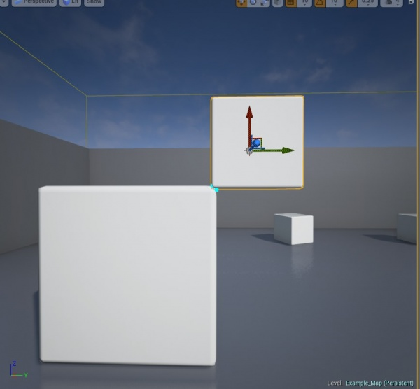
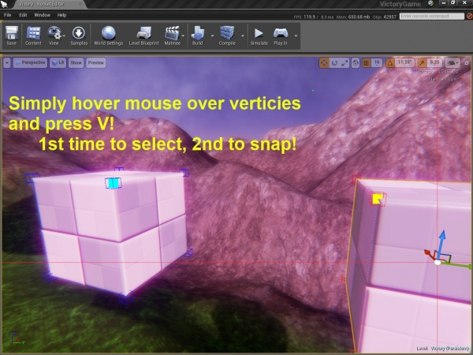
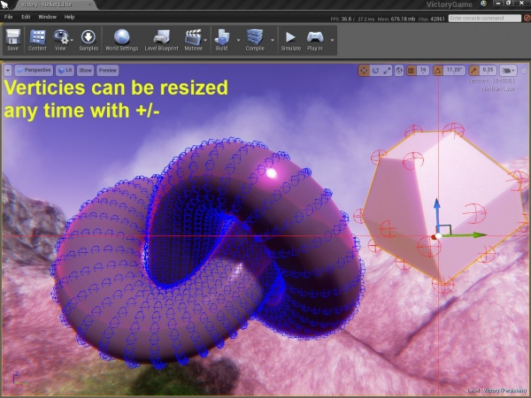
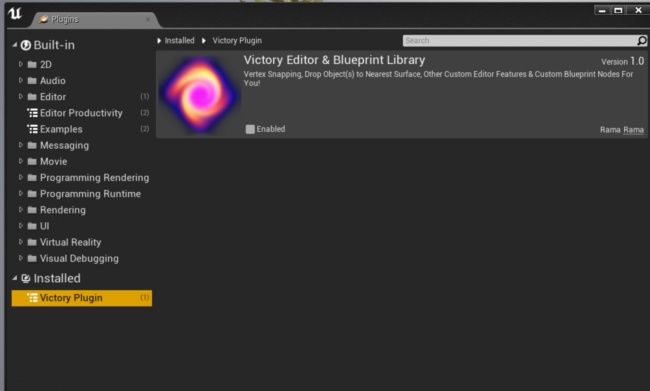
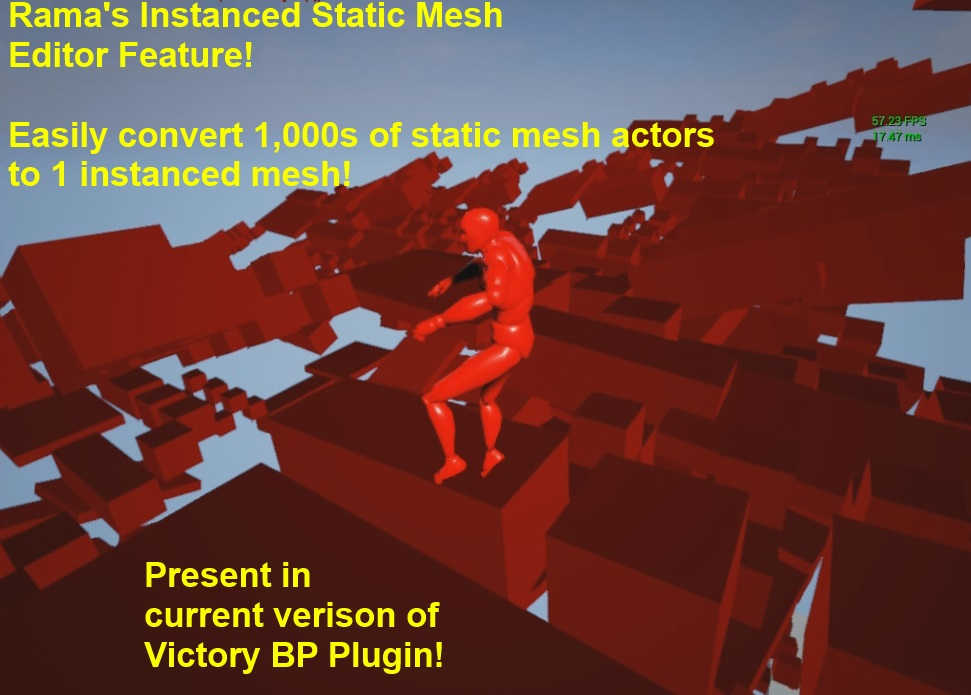
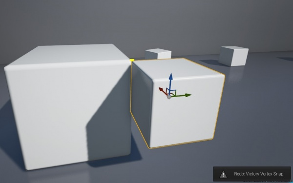

Rama's Vertex Snap Editor Plugin
Contents
- 1 Overview
- 2 Pictures
- 3 Plugin Release Dates and UE4 Engine Versions
- 4 All Future Updates
- 5 Installation of Victory Blueprint Library
- 6 Installation of VictoryEdEngine for Vertex Snapping
- 7 Instanced Static Mesh Editor
- 8 Works With UE4 Undo System
- 9 Newest Editor Feature:
- 10 Drop Static Meshes to Nearest Surface!
- 11 Vertex Snap Plugin
- 12 Victory Editor Align Mode
- 13
- 14 My Entire Plugin C++ Source Code
- 15
- 16 Core of Making Your Own Editor Mode
- 17 Plugin Build.cs
- 18 Plugin Download
- 19 Enjoy!
Overview
Plugin Author: ( )
Dear Community,
Here is my Vertex Snapping UE4 Editor Plugin!
Below I am sharing with you not only the actual plugin, but the entire source code for :
1. The plugin, showing you how to make your own (you get the source with my plugin file download)
2. My extended UE4 Editor Engine class
3. My very own Vertex Snapping Editor Mode, showing you via complete example how you can make your own Editor Modes!
Entire C++ Source Code
My Entire C++ Source Code For You!
Pictures





Plugin Release Dates and UE4 Engine Versions
All Future Updates
Because of the wiki file size limit of 20mb I am compelled to unify my Victory Plugin distribution into Editor + Packaged Binaries only in a media fire download from now on.
All future updates are at this link:
Rama's Victory Plugin, Editor + Packaged Binaries
Entire C++ Source code is included!
Github link: https://github.com/EverNewJoy/VictoryPlugin
Victory Ed Engine ~ Vertex Snapping & Instanced Static Mesh Editor
Media Fire Download Links
I include media fire links in the file description for more recent engine verisons!
Installation of Victory Blueprint Library
You should install my Victory Plugin in the Engine/Plugins/Runtime folder of the appropriate Engine version.
You should always try to package for Development Win64 first, and Shipping Win32 as these are the only two platforms I support for those who do not have C++ access.
Installation of VictoryEdEngine for Vertex Snapping

Plugin download (
5.8 MB
):
It is important to do all of these steps in order
1. download my editor / BP plugin and put in a directory directly off of your main project directory called " Plugins "
spelling must be exact
2. Load UE4 editor and go to Windows->Plugins
3. Find my plugin and make sure it is checked as being active
4. maybe double check #3
5. close the editor.
6. go to YourProject/Config/DefaultEngine.ini
7. add these lines:
[/Script/Engine.Engine] UnrealEdEngine=/Script/VictoryEdEngine.VictoryEdEngine
(Please note these instructions are only for VictoryEdEngine plugin, Victory Plugin does not need this as it is a runtime/packaged game plugin that does not modify the editor)
8. Load UE4 Editor again
9. click on any static mesh actor
10. You should now see the Victory Editor HotKeys button in the top left
11. If you hover mouse over this title area any time, you can get the list of hotkeys
12. Enjoooy!
What does this all do?
My plugin includes an alternative UnrealEdEngine class, that makes use of my new additional FEdMode editor mode class.
The config file tells the main UE4 binary to use my alternative UnrealEdEngine class instead of the default.
Commenting out the line you added will instantly disable my Editor Mode.
Unchecking my plugin in Windows->Plugins within the editor, but leaving the config file set,
is pretty much guaranteed to cause a crash.
soooo
Disabling My Editor Mode / Entire Plugin
To disable my editor mode you should *always* comment out the DefaultEngine.ini line first!
Then you can load the editor again and disable the plugin entirely
My plugin cannot corrupt or damage your main UE4 install in any way,
If you get a crash dont panic, just read these steps again
" Help I can't Load UE4 Anymore "
The worst that can happen is that the config file gets setup up wrong,
and you wont be able to load the editor,
and it will crash if you try cause it can't find the new Engine class.
But, this is extremely easy to fix!
just comment out the line that you added in your config file and you are guaranteed good-to-go
[/Script/Engine.Engine] UnrealEdEngine=/Script/VictoryEdEngine.VictoryEdEngine
Instanced Static Mesh Editor

Introduction Video
<youtube> https://www.youtube.com/watch?v=iC1sjgalEJg ]
Setup
<youtube> https://www.youtube.com/watch?v=mYj_kaLDZZ4 ]
I recently added a feature so that you can select many static mesh actors that all have the same static mesh and convert them into 1 instanced static mesh!
This process can be reversed at any time to make individual edits!
In this way you can enable UE4 to render 1000s of static meshes while maintaining very high FPS!
Now you can edit instanced static meshes with all the tools you are familiar with and convert all the static mesh actors when you are done, to get a huge FPS boost!
Update: Part of Victory Ed Engine
My ISM Editor feature is now part of the Victory Ed Engine plugin which is separate from the Victory BP Library plugin :)
Mandatory Setup Step
To make my Instanced Static Mesh system work with your project you have to choose a ISM actor class. You can either create your own by adding a Instanced Static Mesh Actor to a new Actor blueprint, making the ISM component the root component, or you can use the VictoryISM class in my Victory BP Library plugin!
1. Go to Project Settings->Game->Victory Ed Engine
2. Choose your own custom Instanced Static Mesh Actor class, or use the one from my Victory BP Library plugin
3. Select a bunch of static mesh actors and press i to convert them, shift + i to convert back, also work with undo/redo
4. Enjoy!
Works With UE4 Undo System
My Vertex Snap Editor Mode now works with UE4's undo system!
Yay!
You can undo as many individual snap events as you want!
Note that I only save an undo state when you release the V key to avoid flooding the system while you are continuously snapping while holding down V.
So make sure you release the V key to save your final state before using CTRL + Z

Rama
Newest Editor Feature:
New Display Options
Now pressing the U key is a display toggle!
- Default = only show the vertex the mouse is hovering over
- Press U once to show all vertices
- Press U again to show no vertices
- Press U again to be back to showing cursor-highlighted vertices only
- etc
New Workflow(3/27/14)
- Press V to select a vertex
- Hold down V to continuously snap to vertices of other highlighted meshes
- Release to finalize the move
New Snap to Surface Normal Workflow
- Press V and and also hold down shift
- If you fiddle with your approach angle and move the mouse little bits, you can get some really great normal alignments without much effort
Enjoy!
Rama
Drop Static Meshes to Nearest Surface!
Now you can just press the Y key in the UE4 Editor
to drop the selected Static Mesh or Static Meshes to the nearest surface in the level!
You can drop Static Meshes down to each other too!
My algorithm takes into account the actual shape of the static mesh being dropped, as well as the landscape/level/meshes it is being dropped onto!
If you have multiple objects selected , they are treated as one big object and all the surfaces are calculated together, and the group is dropped, maintaining formation, to the nearest surface within your level.
Vertex Snap Plugin
My extended Editor Engine detects when the user clicks on a static mesh actor, and activates my Vertex Snapping Editor Mode.
UE4 Editor Plugin, No Code Compile Required
Dear Community,
This is my very first new Editor Mode for the main UE4 Editor!
This is a tiny ( under 10 MB ) plugin, that you can download and use without having to compile any source code.
Your project does not have to be a code-based project!
It adds 3 new features
1. Toggle instantly moving selected static meshes to the mouse cursor, to quickly move them around, or "teleport" them across the map, supports Multi Selection.
2. Press K to reset a static mesh actor's rotation
3. Vertex Snapping! Optionally snap to surface normal of destination static mesh
-verticies can be resized anytime using + or - -you can cycle among 5 different verticies display options at any time -you can toggle vertex displaying by pressing Y.
All of the features are related to static mesh actors and my editor mode disables itself if you are not working with a static mesh actor.
It is super easy to enable or disable my editor mode, or suspend it entirely after trying it out.
With my editor mode plugin you can enjoy some new features for your UE4 Editor Experience!
Victory Editor Align Mode
Features:
Instant Mouse Move of Static Mesh Actor
-Press T key to toggle this mode! (mapping it to a mouse button proved too complicated given all existing editor mouse button functionality)
-The selected Static Mesh(es) will move instantly to follow the mouse cursor anywhere in the XY plane, staying on the current Z
-This can be used to instantly move objects to a location by a. selecting them all b. moving to your desired destination location c. press T key and they will all warp to your current location :)
-Supports multi-selection
Reset any Static Mesh Actor's rotation to 0
-Press the K key -just a handy little feature, -extra-useful if the vertex Snap-By-Surface-Normal goes wonky
Vertx Display and Snapping
-Press Y key to toggle displaying of static mesh verticies! -Press B to toggled between five different display types for all verticies a. simple crosshair b. solid rectangle c. 3D box d. diamond (pretty good even at 4000 verticies) e. sphere (slow for > 3000 verticies)
-Hold SHIFT while selecting the second vertex to use Snap-By-Surface-Normal, which will try to align the source static mesh actor with the surface of the destination actor.
-snap selected static mesh actor by chosen vertex to the chosen vertex of another static mesh actor,
-can do whole process with 3 input key presses total!
Vertex Resizing
You can resize all the verticies at once by pressing and holding -/+
Verticies Dynamically Update
No matter how you scale or rotate the mesh the drawn verticies will update correctly:)
Vertex Selection
You can move/rotate the selected static mesh actor after selecting one of its verticies, and the selection will be maintained and updated.
WorkFlow Efficiency
Fast User Interface
Vertex snapping can be accompished in three input presses total
1. select the actor you are going to move 2. hover over chosen vertex and press V 3. hover over chosen vertex of other mesh and press V
The reason this only takes 3 inputs is because when you hover the mouse over other static mesh actors,
my editor mode automatically highlights all of the vertices and the vertex that is closest to the cursor.
Why not use Mouse Click?
The reason the vertex selections are key presses not mouse clicks:
-any kind of mouse click tends to change selection, and I dont wish to override this functionality
-it's easy to miss-click with the mouse on a vertex that is at a corner, and end up selecting the landscape instead
-the thematic consistency provided by using a same-key-press to do the whole snap process feels nice :)
The flow becomes:
hover mouse over vertex press key V
hover mouse over other vertex press same key V
Snap done!
Speed: Using the PDI / Primitive Draw Interface
In case you are curious, I am drawing directly to the PDI, the fundamental drawing surface, using DrawPoint.
This is about as light-weight as I know how to get at present
An advantage of using PDI and DrawPoint is that only verticies in the chosen depth priority will draw.
This enables me to hide verticies that you would not realistically want to click on from the opposite side of a mesh.
High Vertex Counts
-Verticies are not drawn if the object vertex count is too high (10,000 at moment), as that could cause a long delay or even a hang if you click on a high-res statue or something like that :)
- I automatically switch sphere vertex display mode down to box mode if vertex cound is > 5000 to prevent slowdown if cycling through the B key
Editor Environment Integration
-Victory Align Mode auto-activates when you click on Static Mesh Actors,
-Press P key to restore previous Editor mode and Real Time Status instantly
-Clicking on non-static mesh actors will restore previous Editor Mode
Example:
If you are busy clicking on stuff and you end up in my editor mode by accident, press the P key to instantly revert to prevous mode
Interface:
-There is a useful hover-button in top left of window that will show you all the hotkeys for this Editor Mode any time you hover mouse over it
-The hover-button fades itself out to be less visual distraction, but hovering mouse over it will fade it back in and display helpful info
-When using the Instant Mouse Move by tapping the T key,
the move/rotate/scale main editor widget disappears to let you know you are in that mode and also because it is not really usable while using the T-key mode.
-Deselecting or exiting the mode cancels the Instant T(ranslate) key mode.
Using Vertex Snap Mode
Once you click on a static mesh actor, if the verticies are not showing, press the V key
1. Hover mouse on vertex,
2. press V
3. Hover mouse over other static mesh and one of its verticies,
4. press V
If you are using Align-By-Surface-Normal, the selected static mesh will attempt to orient itself to the surface closest to the vertex of the other static mesh.
Vertex Editor Plugin Summary
Light-Weight for Your UE4 Editing Experience
I tried to make the vertex-selection aspect of my editor mode as light-weight as possible,
- no traces - no collision - no extra actors involved - just drawing to the PDI
There is not actually any 3D collision for the verticies!
I defined a "button" struct which stores the projected coordinates of the verticies, plus the resizable drawn-vertex scaling.
So as you scale the verticies the buttons grow to accommodate.
Whenever the view changes, the buttons are freshed.
If there is no input to the UE4 Editor or you have it in the background, the buttons are never refreshed
In Summary, it's just a bunch of invisible floats that are determining when you are clicking or highlighting the verticies of the Static Mesh Actors
Have Fun
Have fun with my editor mode!
( )
My Entire Plugin C++ Source Code
Credits
Feel free to use my C++ code as an outline for making your own Editor Mode Plugin!
Just please give me credit somewhere appropriate.
I did not use any algorithms or math equations from any source,
I wrote all the code myself and just used Epic's awesome UE4 Beta .h files as a reference.
This code does not contain any UE4 C++ source code, as I did not have access to it when I wrote this plugin.
VictoryEdEngine
This is the class that becomes your new UE4 Engine class, and it must be set to be used by UE4 via DefaultEngine.ini
[/Script/Engine.Engine]
;UnrealEdEngine=/Script/UnrealEd.UnrealEdEngine
UnrealEdEngine=/Script/VictoryBPLibrary.VictoryEdEngine
.H
#pragma once
#include "UnrealEd.h"
#include "VictoryEdAlignMode.h"
#include "VictoryEdEngine.generated.h"
USTRUCT()
struct FDropToClosestSurfaceData
{
GENERATED_USTRUCT_BODY()
UPROPERTY()
AStaticMeshActor* TheActor;
UPROPERTY()
FVector SurfaceLoc;
UPROPERTY()
float DistSquared;
FDropToClosestSurfaceData()
{
DistSquared = 1000000000;
SurfaceLoc = FVector::ZeroVector;
TheActor = NULL;
}
};
USTRUCT()
struct FVButton
{
GENERATED_USTRUCT_BODY()
UPROPERTY()
int32 Vibe;
UPROPERTY()
FVector PointInWorld;
UPROPERTY()
float minX;
UPROPERTY()
float maxX;
UPROPERTY()
float minY;
UPROPERTY()
float maxY;
FVButton()
{
Vibe = -1;
}
};
UCLASS(config=Engine)
class UVictoryEdEngine : public UUnrealEdEngine
{
GENERATED_UCLASS_BODY()
bool CreatedVictoryEdMode;
//the user-selected mode prior to initiating VictoryEdMode
FEditorModeID PrevModeID;
//utility
//Assets
public:
/*
UPROPERTY()
UStaticMesh* AssetSM_EngineCube;
//StaticMesh'/Engine/EngineMeshes/Cube.Cube'
UPROPERTY()
UMaterial* ColorMat;
UPROPERTY()
UMaterialInstanceDynamic* ColorMatInst_GlowyBlue;
UPROPERTY()
UMaterialInstanceDynamic* ColorMatInst_GlowyRed;
UPROPERTY()
UMaterialInstanceDynamic* ColorMatInst_GlowyYellow;
*/
//Font
public:
UPROPERTY()
UFont* VictoryEditorFont;
//Font'/Engine/EngineFonts/RobotoDistanceField.RobotoDistanceField'
FORCEINLINE UFont* GetVictoryFont()
{
if(VictoryEditorFont) return VictoryEditorFont;
return GetStatsFont();
}
//Selection
public:
AActor* VSelectedActor;
TArray<FVector> SelectionRelativeOffsets;
void GetSelectedActorsRelativeOffsets();
bool SelectedActorVerticiesNeedsUpdating;
bool ClearSelectedVertex;
//core
public:
static const FName VictoryEditorModeID;
void SwitchToVictoryEdMode();
FORCEINLINE void ExitVictoryAlignMode()
{
//Deactivate Mode
GEditorModeTools().DeactivateMode( VictoryEditorModeID );
//Restore Previous Realtime State
//GCurrentLevelEditingViewportClient->RestoreRealtime(true); //allow disable
//Activate Previous Mode
GEditorModeTools().ActivateMode(PrevModeID);
}
//tests
public:
void RunTests();
protected:
virtual void NoteSelectionChange() OVERRIDE;
virtual void Tick(float DeltaSeconds, bool bIdleMode) OVERRIDE;
};
.CPP
// Copyright 1998-2013 Epic Games, Inc. All Rights Reserved.
//Unreal Editor Fun With Rama
//#include "VictoryGame.h"
#include "VictoryBPLibraryPrivatePCH.h"
const FName UVictoryEdEngine::VictoryEditorModeID = FName("VictoryEditorMode");
UVictoryEdEngine::UVictoryEdEngine(const class FPostConstructInitializeProperties& PCIP)
: Super(PCIP)
{
CreatedVictoryEdMode = false;
PrevModeID = FBuiltinEditorModes::EM_Default;
//Font
static ConstructorHelpers::FObjectFinder<UFont> TheFontOb(TEXT("Font'/Engine/EngineFonts/RobotoDistanceField.RobotoDistanceField'"));
VictoryEditorFont = (UFont*)TheFontOb.Object;
/*
//Cube
static ConstructorHelpers::FObjectFinder<UStaticMesh> StaticMeshOb_cube(TEXT("StaticMesh'/Engine/EngineMeshes/Cube.Cube'"));
AssetSM_EngineCube= StaticMeshOb_cube.Object;
//Color Mat Inst
static ConstructorHelpers::FObjectFinder<UMaterial> ColorMatInstOb(TEXT("Material'/Engine/EditorMaterials/Utilities/LinearColorPicker_MAT.LinearColorPicker_MAT'"));
ColorMat = ColorMatInstOb.Object;
//Create Instance
if(ColorMat)
{
ColorMatInst_GlowyBlue = UMaterialInstanceDynamic::Create(ColorMat, this);
if(ColorMatInst_GlowyBlue) ColorMatInst_GlowyBlue->SetVectorParameterValue(FName("Color"), FLinearColor(0,0,1,1));
ColorMatInst_GlowyRed = UMaterialInstanceDynamic::Create(ColorMat, this);
if(ColorMatInst_GlowyRed) ColorMatInst_GlowyRed->SetVectorParameterValue(FName("Color"), FLinearColor(1,0,0,1));
ColorMatInst_GlowyYellow = UMaterialInstanceDynamic::Create(ColorMat, this);
if(ColorMatInst_GlowyYellow) ColorMatInst_GlowyYellow->SetVectorParameterValue(FName("Color"), FLinearColor(1,1,0,1));
}
*/
}
void UVictoryEdEngine::SwitchToVictoryEdMode()
{
//Create it if it not exist yet
if(!CreatedVictoryEdMode)
{
//Proper way to make a shared ref ???
TSharedRef<class FVictoryEdAlignMode,ESPMode::Fast> VictoryEdMode = MakeShareable( new FVictoryEdAlignMode() );
//Init VictoryEdMode
VictoryEdMode->JoyInit(this);
//Register
GEditorModeTools().RegisterMode(VictoryEdMode);
CreatedVictoryEdMode = true;
}
//[[User:Admin|Admin]] ([[User talk:Admin|talk]]) Store Previous Editor Mode [[User:Admin|Admin]] ([[User talk:Admin|talk]])
TArray<FEdMode*> OutActiveModes;
FEdMode* CurMode = NULL;
GEditorModeTools().GetActiveModes( OutActiveModes );
for(int32 Itr = 0; Itr < OutActiveModes.Num(); Itr++)
{
CurMode = OutActiveModes[Itr];
if(!CurMode) continue;
if(CurMode->GetID() == VictoryEditorModeID ) continue;
PrevModeID = CurMode->GetID();
//UE_LOG(Victory,Warning, TEXT("Previous Editor Mode: %s"), *CurMode->GetID().ToString() );
}
//Activate Victory Editor Mode
GEditorModeTools().ActivateMode(VictoryEditorModeID);
}
void UVictoryEdEngine::RunTests()
{
//tests
}
void UVictoryEdEngine::GetSelectedActorsRelativeOffsets()
{
SelectionRelativeOffsets.Empty();
//18:11, 4 July 2018 (UTC)18:11, 4 July 2018 (UTC)18:11, 4 July 2018 (UTC)18:11, 4 July 2018 (UTC)[[User:Admin|Admin]] ([[User talk:Admin|talk]]) 18:11, 4 July 2018 (UTC)
//Get the Relative Offsets
const FVector Origin = VSelectedActor->GetActorLocation();
AActor* VSelectItrActor;
for(FSelectionIterator VSelectItr = GetSelectedActorIterator();
VSelectItr; ++VSelectItr )
{
VSelectItrActor = Cast<AActor>(*VSelectItr);
if(!VSelectItrActor) continue;
//18:11, 4 July 2018 (UTC)18:11, 4 July 2018 (UTC)18:11, 4 July 2018 (UTC)[[User:Admin|Admin]] ([[User talk:Admin|talk]])
SelectionRelativeOffsets.Add(VSelectItrActor->GetActorLocation() - Origin );
//UE_LOG(Victory, Error, TEXT("Relative offset %s"), *SelectionRelativeOffsets[SelectionRelativeOffsets.Num() - 1].ToString());
};
}
void UVictoryEdEngine::NoteSelectionChange()
{
Super::NoteSelectionChange();
//18:11, 4 July 2018 (UTC)18:11, 4 July 2018 (UTC)18:11, 4 July 2018 (UTC)~~
if(!GetSelectedActors()) return;
AActor* SelectedActor = Cast<AActor>(GetSelectedActors()->GetTop(AActor::StaticClass()));
if(!SelectedActor) return;
//18:11, 4 July 2018 (UTC)18:11, 4 July 2018 (UTC)18:11, 4 July 2018 (UTC)
if(SelectedActor != VSelectedActor) ClearSelectedVertex = true;
//Update
VSelectedActor = SelectedActor;
//Always Refresh
SelectedActorVerticiesNeedsUpdating = true;
//For use with multi-select moves
GetSelectedActorsRelativeOffsets();
//18:11, 4 July 2018 (UTC)18:11, 4 July 2018 (UTC)18:11, 4 July 2018 (UTC)18:11, 4 July 2018 (UTC)18:11, 4 July 2018 (UTC)18:11, 4 July 2018 (UTC)18:11, 4 July 2018 (UTC)
//Only Activate for Static Mesh Actors Currently
if(SelectedActor->IsA(AStaticMeshActor::StaticClass()))
{
//Switch to Victory Align Mode if not active already
if(!GEditorModeTools().IsModeActive(VictoryEditorModeID))
SwitchToVictoryEdMode();
}
else
{
//Deactivate Mode for Non-Static Mesh Actors
ExitVictoryAlignMode();
}
//18:11, 4 July 2018 (UTC)18:11, 4 July 2018 (UTC)18:11, 4 July 2018 (UTC)18:11, 4 July 2018 (UTC)18:11, 4 July 2018 (UTC)18:11, 4 July 2018 (UTC)18:11, 4 July 2018 (UTC)18:11, 4 July 2018 (UTC)18:11, 4 July 2018 (UTC)18:11, 4 July 2018 (UTC)18:11, 4 July 2018 (UTC)
//RunTests();
//UE_LOG(Victory, Warning, TEXT("New Selected Actor %s"), *SelectedActor->GetName() );
//UE_LOG(Victory, Warning, TEXT("New Selected Actor Location %s"), *SelectedActor->GetActorLocation().ToString() );
}
//18:11, 4 July 2018 (UTC)18:11, 4 July 2018 (UTC)18:11, 4 July 2018 (UTC)18:11, 4 July 2018 (UTC)18:11, 4 July 2018 (UTC)18:11, 4 July 2018 (UTC)18:11, 4 July 2018 (UTC)~
void UVictoryEdEngine::Tick(float DeltaSeconds, bool bIdleMode)
{
Super::Tick(DeltaSeconds,bIdleMode);
}
VictoryEdMode
Since the EdMode is a pure C++ class, it must go in the Public directory of your plugin file structure!
.H
#pragma once
#include "UnrealEd.h"
#include "Editor.h"
//#include "BSPOps.h"
class UVictoryEdEngine;
struct FVButton;
struct FDropToClosestSurfaceData;
class FVictoryEdAlignMode : public FEdMode
{
//Statics
public:
static const FColor RV_VRed;
static const FColor RV_VBlue;
static const FColor RV_VYellow;
static const FLinearColor RV_Red;
static const FLinearColor RV_Yellow;
static const FLinearColor RV_Blue;
//Display Updates
public:
bool DoSingleDisplayUpdate;
//Drop to Surface
public:
//if multiple selected, the test runs on each and finds the nearest of nearest surfaces
void DropSelectedActorsToNearestSurface();
FDropToClosestSurfaceData* GetActorWithShortestDrop(TArray<FDropToClosestSurfaceData>& TheData);
FORCEINLINE void GetBottomSurfacePoint(AStaticMeshActor* TheSMA, FVector& BottomMostPoint)
{
BottomMostPoint = FVector::ZeroVector;
if(!TheSMA) return;
if(!TheSMA->StaticMeshComponent) return;
//18:11, 4 July 2018 (UTC)18:11, 4 July 2018 (UTC)18:11, 4 July 2018 (UTC)18:11, 4 July 2018 (UTC)18:11, 4 July 2018 (UTC)18:11, 4 July 2018 (UTC)18:11, 4 July 2018 (UTC)18:11, 4 July 2018 (UTC)18:11, 4 July 2018 (UTC)18:11, 4 July 2018 (UTC)18:11, 4 July 2018 (UTC)18:11, 4 July 2018 (UTC)18:11, 4 July 2018 (UTC)18:11, 4 July 2018 (UTC)
FVector Origin;
FVector Extent;
TheSMA->GetActorBounds(true,Origin,Extent);
TheSMA->StaticMeshComponent->GetDistanceToCollision(Origin - FVector(0,0,Extent.Z + 100),BottomMostPoint);
}
//Vertex:
public:
void GetSelectedVertexLocation(FVector& LocOut);
//Snap Key Pressed!
bool SnapKeyPressed;
//VertexDisplayChoice
uint8 VertexDisplayChoice;
//Snap!
void DoVertexSnap(const FVector& Dest);
FPositionVertexBuffer* SelectedVertexBuffer;
FPositionVertexBuffer* HighlightedVertexBuffer;
//Highlighted Actor
AStaticMeshActor* HighlightedActor;
//Buttons
TArray<FVButton> SelectedActorButtons;
TArray<FVButton> HighlightedActorButtons;
//CheckArrays - find the vertex button closest to camera
TArray<FVButton*> ClosestSelectedActorButtons;
TArray<FVButton*> ClosestHighlightedActorButtons;
int32 FindClosestOfButtons(TArray<FVButton*> Inbuttons);
void RefreshVertexButtons(const FSceneView* View);
//18:11, 4 July 2018 (UTC)18:11, 4 July 2018 (UTC)18:11, 4 July 2018 (UTC)18:11, 4 July 2018 (UTC)18:11, 4 July 2018 (UTC)18:11, 4 July 2018 (UTC)[[User:Admin|Admin]] ([[User talk:Admin|talk]]) 18:11, 4 July 2018 (UTC)
//Vertex Scale
float CurrentVerticiesScale;
bool PlusIsDown;
bool MinusIsDown;
bool DoDrawVerticies;
//Index of Vertex, so actor can move and maintain selection
int32 SelectedVertexForSelectedActor;
int32 HighlightedVertexForSelectedActor;
int32 HighlightedVertexForHighlightedActor;
//18:11, 4 July 2018 (UTC)18:11, 4 July 2018 (UTC)18:11, 4 July 2018 (UTC)18:11, 4 July 2018 (UTC)18:11, 4 July 2018 (UTC)18:11, 4 July 2018 (UTC)[[User:Admin|Admin]] ([[User talk:Admin|talk]]) 18:11, 4 July 2018 (UTC)
FVector VertexWorldSpace;
FVector2D Vertex2DCenter;
//Vertex Functions
void PDI_DrawVerticies(const FSceneView* View, FPrimitiveDrawInterface* PDI, const FPositionVertexBuffer* VertexBuffer, const FTransform& SMATransform, bool DrawingSelectedActor);
//Get Vertex Bufer
FPositionVertexBuffer* GetVerticies(AStaticMeshActor* TheSMA);
//Mouse Instant Move SMA
public:
bool UsingMouseInstantMove;
void ProcessMouseInstantMove(FLevelEditorViewportClient* ViewportClient);
//
//Selection
public:
AActor* VSelectItrActor;
//Input Related
public:
FVector2D MouseLocation;
FVector2D PrevMouseLocation;
FVector CursorWorldPrevPos;
FVector CursorWorldPos;
FVector CursorWorldDir;
FVector CursorWorldDelta;
void InputKeyPressed(EKey Key);
void InputKeyReleased(EKey Key);
void InputKeyDoubleClick(EKey Key);
void MiddleMouseEvent(EInputEvent Event);
void LeftMouseClick();
//States
bool RMBDown;
bool XDown;
bool YDown;
bool ShiftDown;
//HUD
public:
FIntPoint ViewportSize;
void DrawHotkeyToolTip(FCanvas* Canvas);
void DrawMouseCoordinates(FCanvas* Canvas);
void CheckCursorInButtons(FCanvas* Canvas);
TArray<FVButton> VictoryButtons;
int32 ActiveButton_Vibe;
FVButton* CurCheckButton;
void RefreshVictoryButtons();
bool PendingButtonRefresh;
//Utility
public:
void DrawVictoryText(FCanvas* Canvas, const FString& TheStr, float X, float Y, float TheScale=1 );
void DrawVictoryTextWithColor(FCanvas* Canvas, const FString& TheStr, float X, float Y, FLinearColor TheColor=FLinearColor(1,0,1,1), float TheScale=1 );
void DrawVictoryLine(FCanvas* Canvas, const FVector2D& Start, const FVector2D& End, FLinearColor TheColor=FLinearColor(1,0,1,1), float Thick=0 );
void DrawVictoryRect(FCanvas* Canvas, float X, float Y, float Width, float Height, FLinearColor Color=FLinearColor(0,0,1,1));
//Scene-view Level Project and Deproject
void VictoryProject( const FSceneView* View,const FVector& WorldPoint, FVector2D& OutPixelLocation);
void VictoryDeProject( const FSceneView* View,const FVector2D& ScreenPoint, FVector& out_WorldOrigin, FVector& out_WorldDirection);
//Box from Point with Size
FORCEINLINE FBox BoxFromPointWithSize(const FVector& InCenter, const float& Size)
{
return FBox(
InCenter+(FVector(1,1,1) * -Size/2),
InCenter+(FVector(1,1,1) * Size/2)
);
}
//RV
public:
int32 RV_Int32;
float RV_yStart;
float RV_Float;
FVector RV_Vect;
FRotator RV_Rot;
FCollisionQueryParams RV_TraceParams;
FHitResult RV_Hit;
AActor* RV_HitActor;
//Victory Title
//Time
public:
FDateTime VictoryTitleAppearTime;
FTimespan CurTimeSpan;
bool VictoryTitleVisible;
bool FadeInVictoryTitle;
float VictoryTitleAlpha;
FORCEINLINE void VictoryTitleAppears()
{
VictoryTitleAppearTime = FDateTime::Now();
VictoryTitleAlpha = 1;
VictoryTitleVisible = true;
FadeInVictoryTitle = false;
}
//Tick
public:
void Tick_VictoryTitle(FLevelEditorViewportClient* ViewportClient);
void Tick_VictoryTitleFadeIn();
void Tick_VictoryInterface(FLevelEditorViewportClient* ViewportClient);
//Core
public:
UPROPERTY()
UVictoryEdEngine* VictoryEngine;
bool ReEntering;
//Constructor/Destructor
public:
FVictoryEdAlignMode();
~FVictoryEdAlignMode();
void JoyInit(UVictoryEdEngine* EnginePtr);
//FEdMode
public:
virtual void Enter() OVERRIDE;
virtual void Exit() OVERRIDE;
//More fundamental than DrawHUD
virtual void Render(const FSceneView* View,FViewport* Viewport,FPrimitiveDrawInterface* PDI) OVERRIDE;
virtual void DrawHUD(FLevelEditorViewportClient* ViewportClient,FViewport* Viewport,const FSceneView* View,FCanvas* Canvas) OVERRIDE;
virtual bool InputKey(FLevelEditorViewportClient* ViewportClient,FViewport* Viewport,EKey Key,EInputEvent Event) OVERRIDE;
virtual bool MouseMove(FLevelEditorViewportClient* ViewportClient,FViewport* Viewport,int32 x, int32 y) OVERRIDE;
virtual bool InputAxis(FLevelEditorViewportClient* InViewportClient,FViewport* Viewport,int32 ControllerId,EKey Key,float Delta,float DeltaTime) OVERRIDE;
/** Notifies all active modes of any change in mouse movement */
virtual bool InputDelta( FLevelEditorViewportClient* InViewportClient,FViewport* InViewport,FVector& InDrag,FRotator& InRot,FVector& InScale ) OVERRIDE;
virtual bool HandleClick(FLevelEditorViewportClient* InViewportClient, HHitProxy *HitProxy, const FViewportClick &Click) OVERRIDE;
virtual void Tick(FLevelEditorViewportClient* ViewportClient,float DeltaTime) OVERRIDE;
//Cursor
virtual bool GetCursor(EMouseCursor::Type& OutCursor) const OVERRIDE;
/**
* Lets the mode determine if it wants to draw the widget or not.
*/
virtual bool ShouldDrawWidget() const;
};
.CPP
// Victory Ed Mode extension by Rama
// Copyright 1998-2013 Epic Games, Inc. All Rights Reserved.
//Victory Alignment Mode
//#include "VictoryGame.h"
#include "VictoryBPLibraryPrivatePCH.h"
//18:11, 4 July 2018 (UTC)18:11, 4 July 2018 (UTC)18:11, 4 July 2018 (UTC)~
#define CHECK_VSELECTED if(!VictoryEngine) return; if(!VictoryEngine->VSelectedActor) return;
//[[User:Admin|Admin]] ([[User talk:Admin|talk]]) Display Choices [[User:Admin|Admin]] ([[User talk:Admin|talk]])
#define VERTEX_DISPLAY_STARS 0
#define VERTEX_DISPLAY_3DBOX 1
#define VERTEX_DISPLAY_RECT 2
#define VERTEX_DISPLAY_DIAMOND3D 3
#define VERTEX_DISPLAY_SPHERE 4
#define VERTEX_SELECTED_MULT 1.333
#define VERTEX_SHAPE_MULT 0.8
//[[User:Admin|Admin]] ([[User talk:Admin|talk]]) Defines [[User:Admin|Admin]] ([[User talk:Admin|talk]])
//MAX
#define MAX_VERTEX_COUNT_FOR_DRAWING 10000
#define MAX_VERTEX_COUNT_FOR_DRAWING_SPHERES 5000
//Speeds
#define XYZSPEEDMULT 20
//3D
#define DEFAULT_INSTANT_MOVE_DISTANCE 2048
#define CURSOR_DELTA_DISTANCE_CALC 2048
//HUD
#define VICTORY_TITLE_HEIGHT 38
#define VICTORY_TEXT_HEIGHT 24
//Color
#define RED 0
#define BLUE 1
#define YELLOW 3
//TIME
#define VICTORY_TITLE_VISIBLE_DURATION 2
//Button Vibes
#define BUTTON_VIBE_VICTORYHOTKEYS 0
//[[User:Admin|Admin]] ([[User talk:Admin|talk]]) Const [[User:Admin|Admin]] ([[User talk:Admin|talk]])
const FLinearColor FVictoryEdAlignMode::RV_Red = FLinearColor(1,0,0,1);
const FLinearColor FVictoryEdAlignMode::RV_Yellow = FLinearColor(1,1,0,1);
const FLinearColor FVictoryEdAlignMode::RV_Blue= FLinearColor(0,0,1,1);
const FColor FVictoryEdAlignMode::RV_VRed = FColor(255,0,0,255);
const FColor FVictoryEdAlignMode::RV_VBlue = FColor(0,0,255,255);
const FColor FVictoryEdAlignMode::RV_VYellow = FColor(255,255,0,255);
FVictoryEdAlignMode::FVictoryEdAlignMode()
{
}
FVictoryEdAlignMode::~FVictoryEdAlignMode()
{
}
//INIT
void FVictoryEdAlignMode::JoyInit(UVictoryEdEngine* EnginePtr)
{
ID = FName("VictoryEditorMode");
//VictoryEngine
VictoryEngine = EnginePtr;
//Victory Buttons
RefreshVictoryButtons();
//Enable Realtime
ReEntering = true;
//Verticies
DoDrawVerticies = true;
VertexDisplayChoice = VERTEX_DISPLAY_STARS;
//[[User:Admin|Admin]] ([[User talk:Admin|talk]])
UsingMouseInstantMove = false;
CurrentVerticiesScale = 12;
//[[User:Admin|Admin]] ([[User talk:Admin|talk]])
//Traces
RV_TraceParams = FCollisionQueryParams(FName(TEXT("HUDRMBDown")), true, NULL);
RV_TraceParams.bTraceComplex = true;
//RV_TraceParams.bTraceAsyncScene = true;
RV_TraceParams.bReturnPhysicalMaterial = false;
}
void FVictoryEdAlignMode::RefreshVictoryButtons()
{
VictoryButtons.Empty();
//18:11, 4 July 2018 (UTC)18:11, 4 July 2018 (UTC)~~
FVButton NewButton;
NewButton.Vibe = BUTTON_VIBE_VICTORYHOTKEYS;
NewButton.minX = 10;
NewButton.maxX = 200;
NewButton.minY = VICTORY_TITLE_HEIGHT;
NewButton.maxY = VICTORY_TITLE_HEIGHT + VICTORY_TEXT_HEIGHT;
VictoryButtons.Add(NewButton);
}
//EXIT
void FVictoryEdAlignMode::Exit()
{
UsingMouseInstantMove = false;
}
//ENTER
void FVictoryEdAlignMode::Enter()
{
//FEdMode::Enter();
//18:11, 4 July 2018 (UTC)[[User:Admin|Admin]] ([[User talk:Admin|talk]])
//Victory Title Appears
VictoryTitleAppears();
ReEntering = true;
//Clear keys
MinusIsDown = false;
PlusIsDown = false;
ShiftDown = false;
//Trace
RV_TraceParams = FCollisionQueryParams(FName(TEXT("HUDRMBDown")), true, NULL);
//18:11, 4 July 2018 (UTC)18:11, 4 July 2018 (UTC)18:11, 4 July 2018 (UTC)~
//testing
CHECK_VSELECTED
//CreateUModel();
}
//18:11, 4 July 2018 (UTC)18:11, 4 July 2018 (UTC)18:11, 4 July 2018 (UTC)18:11, 4 July 2018 (UTC)18:11, 4 July 2018 (UTC)18:11, 4 July 2018 (UTC)18:11, 4 July 2018 (UTC)18:11, 4 July 2018 (UTC)[[User:Admin|Admin]] ([[User talk:Admin|talk]])
FDropToClosestSurfaceData* FVictoryEdAlignMode::GetActorWithShortestDrop(TArray<FDropToClosestSurfaceData>& TheData)
{
//No Actors
if(TheData.Num() < 1) return NULL;
//Only 1 Actor
if(TheData.Num() < 2) return &TheData[0];
//18:11, 4 July 2018 (UTC)18:11, 4 July 2018 (UTC)18:11, 4 July 2018 (UTC)18:11, 4 July 2018 (UTC)18:11, 4 July 2018 (UTC)~~
float SmallestDistance = 100000000;
int32 SmallestDataIndex = 0;
//Find Smallest
for(int32 b = 0; b < TheData.Num(); b++)
{
if( TheData[b].DistSquared < SmallestDistance)
{
SmallestDistance = TheData[b].DistSquared;
SmallestDataIndex = b;
}
}
//Valid?
if(TheData.IsValidIndex(SmallestDataIndex))
{
return &TheData[SmallestDataIndex];
}
return NULL;
}
void FVictoryEdAlignMode::DropSelectedActorsToNearestSurface()
{
if(!VictoryEngine) return;
//18:11, 4 July 2018 (UTC)18:11, 4 July 2018 (UTC)[[User:Admin|Admin]] ([[User talk:Admin|talk]])
//ONLY WORKING WITH SMAs at the moment, due to nature of rest of plugin
AStaticMeshActor* AsSMA = NULL;
//18:11, 4 July 2018 (UTC)18:11, 4 July 2018 (UTC)[[User:Admin|Admin]] ([[User talk:Admin|talk]]) 18:11, 4 July 2018 (UTC)
// Closest Surface Data
//18:11, 4 July 2018 (UTC)18:11, 4 July 2018 (UTC)[[User:Admin|Admin]] ([[User talk:Admin|talk]]) 18:11, 4 July 2018 (UTC)
TArray<FDropToClosestSurfaceData> ClosestSurfaceData;
//18:11, 4 July 2018 (UTC)18:11, 4 July 2018 (UTC)18:11, 4 July 2018 (UTC)18:11, 4 July 2018 (UTC)18:11, 4 July 2018 (UTC)18:11, 4 July 2018 (UTC)18:11, 4 July 2018 (UTC)18:11, 4 July 2018 (UTC)18:11, 4 July 2018 (UTC)[[User:Admin|Admin]] ([[User talk:Admin|talk]])
//TRACE PARAMETERS
FCollisionQueryParams TraceParams(FName(TEXT("VictoryEd Trace")), true, NULL);
TraceParams.bTraceComplex = true;
//TraceParams.bTraceAsyncScene = true;
TraceParams.bReturnPhysicalMaterial = false;
//Ignore ALL Selected Actors
for(FSelectionIterator VSelectItr = VictoryEngine->GetSelectedActorIterator();
VSelectItr; ++VSelectItr )
{
VSelectItrActor = Cast<AActor>(*VSelectItr);
if(!VSelectItrActor) continue;
//18:11, 4 July 2018 (UTC)18:11, 4 July 2018 (UTC)18:11, 4 July 2018 (UTC)[[User:Admin|Admin]] ([[User talk:Admin|talk]])
//Add
TraceParams.AddIgnoredActor(VSelectItrActor);
}
//18:11, 4 July 2018 (UTC)18:11, 4 July 2018 (UTC)18:11, 4 July 2018 (UTC)18:11, 4 July 2018 (UTC)18:11, 4 July 2018 (UTC)18:11, 4 July 2018 (UTC)18:11, 4 July 2018 (UTC)18:11, 4 July 2018 (UTC)18:11, 4 July 2018 (UTC)[[User:Admin|Admin]] ([[User talk:Admin|talk]])
//18:11, 4 July 2018 (UTC)18:11, 4 July 2018 (UTC)~
//Hit Result
FHitResult TheHit;
//18:11, 4 July 2018 (UTC)18:11, 4 July 2018 (UTC)~
//Iterate Over Selected Actors
FVector ActorLoc;
FVector BottomPoint;
FVector OffsetFromCenter;
for(FSelectionIterator VSelectItr = VictoryEngine->GetSelectedActorIterator();
VSelectItr; ++VSelectItr )
{
AsSMA = Cast<AStaticMeshActor>(*VSelectItr);
if(!AsSMA) continue;
//18:11, 4 July 2018 (UTC)18:11, 4 July 2018 (UTC)18:11, 4 July 2018 (UTC)[[User:Admin|Admin]] ([[User talk:Admin|talk]])
//18:11, 4 July 2018 (UTC)18:11, 4 July 2018 (UTC)18:11, 4 July 2018 (UTC)
//[[User:Admin|Admin]] ([[User talk:Admin|talk]]) Do the Trace [[User:Admin|Admin]] ([[User talk:Admin|talk]])
//18:11, 4 July 2018 (UTC)18:11, 4 July 2018 (UTC)18:11, 4 July 2018 (UTC)
//Re-initialize hit info
TheHit = FHitResult(ForceInit);
//Trace!
ActorLoc = AsSMA->GetActorLocation();
GetWorld()->LineTraceSingle(
TheHit, //result
ActorLoc,
ActorLoc + FVector(0,0,-20000),
ECC_Pawn, //collision channel
TraceParams
);
//Hit any Actor?
if(!TheHit.GetActor()) continue;
//18:11, 4 July 2018 (UTC)18:11, 4 July 2018 (UTC)18:11, 4 July 2018 (UTC)~~
//See .h
GetBottomSurfacePoint(AsSMA,BottomPoint);
//Offset From Center
OffsetFromCenter = ActorLoc - BottomPoint;
//[[User:Admin|Admin]] ([[User talk:Admin|talk]]) ADD Closest Surface Data [[User:Admin|Admin]] ([[User talk:Admin|talk]])
FDropToClosestSurfaceData NewData;
NewData.TheActor = AsSMA;
NewData.SurfaceLoc = TheHit.ImpactPoint + OffsetFromCenter;
NewData.DistSquared = FVector::DistSquared(AsSMA->GetActorLocation(),NewData.SurfaceLoc);
ClosestSurfaceData.Add(NewData);
}
//Get Smallest Drop Data
FDropToClosestSurfaceData* SmallestDropData = GetActorWithShortestDrop(ClosestSurfaceData);
if(!SmallestDropData) return;
//18:11, 4 July 2018 (UTC)18:11, 4 July 2018 (UTC)18:11, 4 July 2018 (UTC)
//Get Smallest Drop Actor
AStaticMeshActor* AnchorActor = SmallestDropData->TheActor;
if(!AnchorActor) return;
//18:11, 4 July 2018 (UTC)18:11, 4 July 2018 (UTC)18:11, 4 July 2018 (UTC)
//Get Relative Offsets of this to all other actors in selection
const FVector Origin = AnchorActor->GetActorLocation();
TArray<FVector> AnchorOffsets;
AActor* AsActor;
for(FSelectionIterator VSelectItr = VictoryEngine->GetSelectedActorIterator();
VSelectItr; ++VSelectItr )
{
AsActor = Cast<AActor>(*VSelectItr);
if(!AsActor) continue;
//18:11, 4 July 2018 (UTC)18:11, 4 July 2018 (UTC)18:11, 4 July 2018 (UTC)[[User:Admin|Admin]] ([[User talk:Admin|talk]])
AnchorOffsets.Add(AsActor->GetActorLocation() - Origin);
}
//[[User:Admin|Admin]] ([[User talk:Admin|talk]]) Move Anchor Actor [[User:Admin|Admin]] ([[User talk:Admin|talk]])
//Move to impact, Plus the offset from nearest surface of object
AnchorActor->SetActorLocation(SmallestDropData->SurfaceLoc);
//Move all other actors to Anchor Actor + Offset
int32 AnchorItr = 0;
for(FSelectionIterator VSelectItr = VictoryEngine->GetSelectedActorIterator();
VSelectItr; ++VSelectItr )
{
AsActor = Cast<AActor>(*VSelectItr);
if(!AsActor) continue;
//18:11, 4 July 2018 (UTC)18:11, 4 July 2018 (UTC)18:11, 4 July 2018 (UTC)[[User:Admin|Admin]] ([[User talk:Admin|talk]])
//VALID?
if(!AnchorOffsets.IsValidIndex(AnchorItr)) break;
AsActor->SetActorLocation(SmallestDropData->SurfaceLoc + AnchorOffsets[AnchorItr]);
//INC
AnchorItr++;
}
//18:11, 4 July 2018 (UTC)18:11, 4 July 2018 (UTC)[[User:Admin|Admin]] ([[User talk:Admin|talk]]) 18:11, 4 July 2018 (UTC)
//Update Display!
DoSingleDisplayUpdate = true;
//[[User:Admin|Admin]] ([[User talk:Admin|talk]]) RESELECT SINGLE ACTOR TO MOVE WIDGET
if(VictoryEngine->GetSelectedActorCount() < 2)
{
//18:11, 4 July 2018 (UTC)18:11, 4 July 2018 (UTC)18:11, 4 July 2018 (UTC)~~
//Deselect without Noting
VictoryEngine->SelectNone(false, true, false);
VictoryEngine->SelectActor(AnchorActor,true,true);
}
}
//18:11, 4 July 2018 (UTC)18:11, 4 July 2018 (UTC)18:11, 4 July 2018 (UTC)18:11, 4 July 2018 (UTC)18:11, 4 July 2018 (UTC)18:11, 4 July 2018 (UTC)18:11, 4 July 2018 (UTC)18:11, 4 July 2018 (UTC)[[User:Admin|Admin]] ([[User talk:Admin|talk]])
FPositionVertexBuffer* FVictoryEdAlignMode::GetVerticies(AStaticMeshActor* TheSMA)
{
if(!TheSMA) return NULL;
if(!TheSMA->IsValidLowLevel()) return NULL;
if(!TheSMA->StaticMeshComponent) return NULL;
if(!TheSMA->StaticMeshComponent->StaticMesh) return NULL;
if(!TheSMA->StaticMeshComponent->StaticMesh->RenderData) return NULL;
//Valid LOD ?
if(TheSMA->StaticMeshComponent->StaticMesh->RenderData->LODResources.Num() <= 0) return NULL;
//18:11, 4 July 2018 (UTC)18:11, 4 July 2018 (UTC)18:11, 4 July 2018 (UTC)18:11, 4 July 2018 (UTC)18:11, 4 July 2018 (UTC)18:11, 4 July 2018 (UTC)18:11, 4 July 2018 (UTC)18:11, 4 July 2018 (UTC)18:11, 4 July 2018 (UTC)18:11, 4 July 2018 (UTC)18:11, 4 July 2018 (UTC)18:11, 4 July 2018 (UTC)~
//18:11, 4 July 2018 (UTC)18:11, 4 July 2018 (UTC)18:11, 4 July 2018 (UTC)18:11, 4 July 2018 (UTC)
// Vertex Buffer Check
FPositionVertexBuffer* VertexBuffer =
&TheSMA->StaticMeshComponent->StaticMesh->RenderData->LODResources[0].PositionVertexBuffer;
//18:11, 4 July 2018 (UTC)18:11, 4 July 2018 (UTC)18:11, 4 July 2018 (UTC)18:11, 4 July 2018 (UTC)
// Count Too High?
if(VertexBuffer->GetNumVertices() > MAX_VERTEX_COUNT_FOR_DRAWING)
{
//UE_LOG(Victory, Error, TEXT("Vertex Count too high to draw! %d"), VertexBuffer->GetNumVertices() );
return NULL;
//18:11, 4 July 2018 (UTC)~~
}
//Return Vertex Buffer
return &TheSMA->StaticMeshComponent->StaticMesh->RenderData->LODResources[0].PositionVertexBuffer;
}
//18:11, 4 July 2018 (UTC)18:11, 4 July 2018 (UTC)18:11, 4 July 2018 (UTC)18:11, 4 July 2018 (UTC)18:11, 4 July 2018 (UTC)18:11, 4 July 2018 (UTC)18:11, 4 July 2018 (UTC)18:11, 4 July 2018 (UTC)18:11, 4 July 2018 (UTC)
/*
UENUM()
enum EInputEvent
{
IE_Pressed =0,
IE_Released =1,
IE_Repeat =2,
IE_DoubleClick =3,
IE_Axis =4,
IE_MAX =5,
};
*/
//Pressed
void FVictoryEdAlignMode::InputKeyPressed(EKey Key)
{
//UE_LOG(Victory, Error, TEXT("Key pressed %s"), *EKeys::GetKeyName(Key).ToString() );
if(!VictoryEngine) return;
//18:11, 4 July 2018 (UTC)18:11, 4 July 2018 (UTC)~~
//RMB
if(Key == EKeys::RightMouseButton)
{
RMBDown = true;
return;
//18:11, 4 July 2018 (UTC)~
}
//Left Mouse
if(Key == EKey::LeftMouseButton)
{
LeftMouseClick();
return;
//18:11, 4 July 2018 (UTC)~
}
//X Key
if(Key == EKey::X)
{
XDown = true;
return;
}
//Y Key
if(Key == EKey::Y)
{
DropSelectedActorsToNearestSurface();
return;
}
//U Key
if(Key == EKey::U)
{
YDown = true;
DoDrawVerticies = !DoDrawVerticies;
return;
}
//K Key
if(Key == EKey::K)
{
if(VictoryEngine->VSelectedActor)
VictoryEngine->VSelectedActor->SetActorRotation(FRotator::ZeroRotator);
return;
}
//SHIFT KEY
if(Key == EKey::LeftShift || Key == EKey::RightShift)
{
ShiftDown = true;
return;
}
//- Key
if(Key == EKeys::Underscore)
{
MinusIsDown = true;
PendingButtonRefresh = true;
return;
}
//+ Key
if(Key == EKey::Equals)
{
PlusIsDown = true;
PendingButtonRefresh = true;
return;
}
//T Key
if(Key == EKey::T)
{
UsingMouseInstantMove = !UsingMouseInstantMove;
return;
//18:11, 4 July 2018 (UTC)[[User:Admin|Admin]] ([[User talk:Admin|talk]]) 18:11, 4 July 2018 (UTC)
}
//V Key
if(Key == EKey::V)
{
SnapKeyPressed = true;
return;
//18:11, 4 July 2018 (UTC)[[User:Admin|Admin]] ([[User talk:Admin|talk]]) 18:11, 4 July 2018 (UTC)
}
//B Key
if(Key == EKey::B)
{
VertexDisplayChoice++;
if(VertexDisplayChoice > 4) VertexDisplayChoice = 0;
return;
//18:11, 4 July 2018 (UTC)[[User:Admin|Admin]] ([[User talk:Admin|talk]]) 18:11, 4 July 2018 (UTC)
}
//Restore Previous Editor Mode
if(Key == EKey::P)
{
//Clear all Verticies
//Exit
VictoryEngine->ExitVictoryAlignMode();
return;
//18:11, 4 July 2018 (UTC)~
}
}
//Released
void FVictoryEdAlignMode::InputKeyReleased(EKey Key)
{
//RMB
if(Key == EKeys::RightMouseButton)
{
PendingButtonRefresh = true;
RMBDown = false;
}
//LMB
else if(Key == EKeys::LeftMouseButton)
{
PendingButtonRefresh = true;
}
//SHIFT KEY
if(Key == EKey::LeftShift || Key == EKey::RightShift) ShiftDown = false;
//- Key
else if(Key == EKeys::Underscore) MinusIsDown = false;
//+ Key
else if(Key == EKey::Equals) PlusIsDown = false;
//X Key
else if(Key == EKey::X) XDown = false;
//Y Key
else if(Key == EKey::Y) YDown = false;
}
//Double Click
void FVictoryEdAlignMode::InputKeyDoubleClick(EKey Key)
{
//UE_LOG(Victory, Error, TEXT("Key DOUBLE CLICK %s"), *EKeys::GetKeyName(Key).ToString() );
}
bool FVictoryEdAlignMode::InputKey(FLevelEditorViewportClient* ViewportClient,FViewport* Viewport,EKey Key,EInputEvent Event)
{
//Middle Mouse
if (Key == EKeys::MiddleMouseButton) MiddleMouseEvent(Event);
else if(Event == EInputEvent::IE_Pressed) InputKeyPressed(Key);
else if(Event == EInputEvent::IE_Released) InputKeyReleased(Key);
else if(Event == EInputEvent::IE_DoubleClick) InputKeyDoubleClick(Key);
return false;
}
void FVictoryEdAlignMode::ProcessMouseInstantMove(FLevelEditorViewportClient* ViewportClient)
{
CHECK_VSELECTED
if(!ViewportClient) return;
//18:11, 4 July 2018 (UTC)18:11, 4 July 2018 (UTC)18:11, 4 July 2018 (UTC)
//Re-initialize hit info
RV_Hit = FHitResult(ForceInit);
//Clear Previous Ignore Actors
RV_TraceParams.IgnoreActors.Empty();
//Ignore All Selected Actors!!!
for(FSelectionIterator VSelectItr = VictoryEngine->GetSelectedActorIterator();
VSelectItr; ++VSelectItr )
{
VSelectItrActor = Cast<AActor>(*VSelectItr);
if(!VSelectItrActor) continue;
//18:11, 4 July 2018 (UTC)18:11, 4 July 2018 (UTC)18:11, 4 July 2018 (UTC)[[User:Admin|Admin]] ([[User talk:Admin|talk]])
//Add
RV_TraceParams.AddIgnoredActor(VSelectItrActor);
}
//Trace
GetWorld()->LineTraceSingle(
RV_Hit, //result
CursorWorldPos, //start
CursorWorldPos + 100000 * CursorWorldDir , //end
ECC_WorldStatic, //collision channel
RV_TraceParams
);
//Store Hit Actor
RV_HitActor = RV_Hit.GetActor();
//18:11, 4 July 2018 (UTC)18:11, 4 July 2018 (UTC)18:11, 4 July 2018 (UTC)18:11, 4 July 2018 (UTC)18:11, 4 July 2018 (UTC)18:11, 4 July 2018 (UTC)~
// Update Highlighted Actor
//does not equal same does not equal the main Selected Actor
if(RV_HitActor != HighlightedActor && RV_HitActor != VictoryEngine->VSelectedActor )
{
//potentially deselect any highlighted
HighlightedActor = Cast<AStaticMeshActor>(RV_HitActor);
//Refresh Vertex Buffer
HighlightedVertexBuffer = NULL;
if(HighlightedActor) HighlightedVertexBuffer = GetVerticies(HighlightedActor);
}
if(RV_Hit.bBlockingHit)
{
//INVALIDATE THE DISPLAY
ViewportClient->Viewport->InvalidateDisplay();
}
//18:11, 4 July 2018 (UTC)18:11, 4 July 2018 (UTC)18:11, 4 July 2018 (UTC)18:11, 4 July 2018 (UTC)18:11, 4 July 2018 (UTC)18:11, 4 July 2018 (UTC)~
// PROCESS MOUSE INSTANT MOVE?
if(!UsingMouseInstantMove) return;
//18:11, 4 July 2018 (UTC)18:11, 4 July 2018 (UTC)18:11, 4 July 2018 (UTC)18:11, 4 July 2018 (UTC)[[User:Admin|Admin]] ([[User talk:Admin|talk]]) 18:11, 4 July 2018 (UTC)
//If not hit something, use default distance
if(!RV_Hit.bBlockingHit) RV_Hit.ImpactPoint = CursorWorldPos + DEFAULT_INSTANT_MOVE_DISTANCE * CursorWorldDir;
// Move the Primary, the Origin!
RV_Vect = RV_Hit.ImpactPoint;
//Use Existing Z of Object
RV_Vect.Z = VictoryEngine->VSelectedActor->GetActorLocation().Z;
//Update Location
VictoryEngine->VSelectedActor->SetActorLocation(RV_Vect);
//Save New Origin Location
const FVector NewOrigin(RV_Vect);
//18:11, 4 July 2018 (UTC)~~
//Update the Others According to the Moved Origin
RV_Int32 = 0;
for(FSelectionIterator VSelectItr = VictoryEngine->GetSelectedActorIterator();
VSelectItr; ++VSelectItr )
{
VSelectItrActor = Cast<AActor>(*VSelectItr);
if(!VSelectItrActor)
{
RV_Int32++;
continue;
}
//18:11, 4 July 2018 (UTC)18:11, 4 July 2018 (UTC)18:11, 4 July 2018 (UTC)[[User:Admin|Admin]] ([[User talk:Admin|talk]])
//Get New Origin
RV_Vect = NewOrigin;
//Add Offset
if(VictoryEngine->SelectionRelativeOffsets.IsValidIndex(RV_Int32))
{
RV_Vect+=VictoryEngine->SelectionRelativeOffsets[RV_Int32];
}
//Update Location
VSelectItrActor->SetActorLocation(RV_Vect);
//Inc
RV_Int32++;
}
//INVALIDATE THE DISPLAY
ViewportClient->Viewport->InvalidateDisplay();
}
bool FVictoryEdAlignMode::InputDelta( FLevelEditorViewportClient* InViewportClient,FViewport* InViewport,FVector& InDrag,FRotator& InRot,FVector& InScale )
{
//only works if LMB is down
return false;
}
bool FVictoryEdAlignMode::InputAxis(FLevelEditorViewportClient* InViewportClient,FViewport* Viewport,int32 ControllerId,EKey Key,float Delta,float DeltaTime)
{
//only works if any mouse button is down
return false;
}
bool FVictoryEdAlignMode::MouseMove(FLevelEditorViewportClient* ViewportClient,FViewport* Viewport,int32 x, int32 y)
{
if(!ViewportClient) return false;
//18:11, 4 July 2018 (UTC)18:11, 4 July 2018 (UTC)18:11, 4 July 2018 (UTC)
// ESSENTIAL UPDATES
MouseLocation.X=x;
MouseLocation.Y=y;
//[[User:Admin|Admin]] ([[User talk:Admin|talk]]) Cursor World Space [[User:Admin|Admin]] ([[User talk:Admin|talk]])
FViewportCursorLocation CursorWS = ViewportClient->GetCursorWorldLocationFromMousePos();
CursorWorldPos = CursorWS.GetOrigin();
CursorWorldDir = CursorWS.GetDirection();
//Calc Delta
RV_Vect = CursorWorldPos + CursorWorldDir * CURSOR_DELTA_DISTANCE_CALC;
CursorWorldDelta = RV_Vect - CursorWorldPrevPos;
CursorWorldDelta /= 4;
if(CursorWorldDelta.SizeSquared() < 3) CursorWorldDelta = FVector::ZeroVector;
if(CursorWorldDelta.SizeSquared() > 10000) CursorWorldDelta = FVector::ZeroVector;
//Save Prev
CursorWorldPrevPos = RV_Vect;
//18:11, 4 July 2018 (UTC)18:11, 4 July 2018 (UTC)18:11, 4 July 2018 (UTC)
//SUPER HYPER BUTTON REFRESHING
// due to the slide physx camera thing when moving
if(!UsingMouseInstantMove) PendingButtonRefresh = true;
return false;
}
//Middle Mouse Event
void FVictoryEdAlignMode::MiddleMouseEvent(EInputEvent Event)
{
//Pressed
if(Event == EInputEvent::IE_Pressed)
{
return;
}
//Released
if(Event == EInputEvent::IE_Released)
{
return;
}
}
//Left Mouse Click
void FVictoryEdAlignMode::LeftMouseClick()
{
CHECK_VSELECTED
//SelectedVertexForSelectedActor = -1;
}
bool FVictoryEdAlignMode::HandleClick(FLevelEditorViewportClient* InViewportClient, HHitProxy *HitProxy, const FViewportClick &Click)
{
return false;
}
//[[User:Admin|Admin]] ([[User talk:Admin|talk]])
//``
void FVictoryEdAlignMode::GetSelectedVertexLocation(FVector& LocOut)
{
CHECK_VSELECTED
if(!SelectedVertexBuffer) return;
//18:11, 4 July 2018 (UTC)18:11, 4 July 2018 (UTC)18:11, 4 July 2018 (UTC)[[User:Admin|Admin]] ([[User talk:Admin|talk]])
const FTransform SMATransform = VictoryEngine->VSelectedActor->GetTransform();
const FVector SMALocation = SMATransform.GetLocation();
const int32 VertexCount = SelectedVertexBuffer->GetNumVertices();
for(int32 Itr = 0; Itr < VertexCount; Itr++)
{
if(Itr == SelectedVertexForSelectedActor)
{
LocOut = SMALocation + SMATransform.TransformVector(SelectedVertexBuffer->VertexPosition(Itr));
return;
//[[User:Admin|Admin]] ([[User talk:Admin|talk]]) 18:11, 4 July 2018 (UTC)
}
}
}
void FVictoryEdAlignMode::DoVertexSnap(const FVector& Dest)
{
CHECK_VSELECTED
FVector SelectedVertexLocation;
//Initial Location
GetSelectedVertexLocation(SelectedVertexLocation);
//Match rotation of owner of target vertex?
if(ShiftDown)
{
VictoryEngine->VSelectedActor->SetActorRotation(RV_Hit.ImpactNormal.Rotation());
//Recalc Selected Vertex After Rotation
GetSelectedVertexLocation(SelectedVertexLocation);
//UE_LOG(Victory, Error, TEXT("WHAT IS HIT NORMAL %s"), *RV_Hit.ImpactNormal.Rotation().ToString() );
}
//No modifier, just regular click
//1. calc distance between selected vertex and JSMA location
//2. move the JSMA to the target vertex
//3. subtract the distance
//Distance Offset
const FVector LocOffset = SelectedVertexLocation - VictoryEngine->VSelectedActor->GetActorLocation();
//Set Location
VictoryEngine->VSelectedActor->SetActorLocation(Dest - LocOffset);
//Refresh After Moving
PendingButtonRefresh = true;
}
void FVictoryEdAlignMode::RefreshVertexButtons(const FSceneView* View)
{
CHECK_VSELECTED
if(!View) return;
//18:11, 4 July 2018 (UTC)18:11, 4 July 2018 (UTC)[[User:Admin|Admin]] ([[User talk:Admin|talk]])
//No Longer Pending
PendingButtonRefresh = false;
//Refresh
SelectedActorButtons.Empty();
HighlightedActorButtons.Empty();
//[[User:Admin|Admin]] ([[User talk:Admin|talk]]) Vars [[User:Admin|Admin]] ([[User talk:Admin|talk]])
const float ButtonHalfSize = CurrentVerticiesScale/2;
//18:11, 4 July 2018 (UTC)18:11, 4 July 2018 (UTC)18:11, 4 July 2018 (UTC)18:11, 4 July 2018 (UTC)~
// Selected Actor
//18:11, 4 July 2018 (UTC)18:11, 4 July 2018 (UTC)18:11, 4 July 2018 (UTC)18:11, 4 July 2018 (UTC)~
if(!VictoryEngine->VSelectedActor->IsValidLowLevel() ) return;
if(!SelectedVertexBuffer) return;
//18:11, 4 July 2018 (UTC)18:11, 4 July 2018 (UTC)18:11, 4 July 2018 (UTC)[[User:Admin|Admin]] ([[User talk:Admin|talk]])
FTransform SMATransform = VictoryEngine->VSelectedActor->GetTransform();
FVector SMALocation = SMATransform.GetLocation();
const int32 VertexCount = SelectedVertexBuffer->GetNumVertices();
for(int32 Itr = 0; Itr < VertexCount; Itr++)
{
//Get Rotated Scaled Translated Vertex Pos
VertexWorldSpace = SMALocation + SMATransform.TransformVector(SelectedVertexBuffer->VertexPosition(Itr));
//Get 2D Center
VictoryProject(View,
VertexWorldSpace,
Vertex2DCenter
);
FVButton NewButton;
NewButton.Vibe = Itr;
NewButton.PointInWorld = VertexWorldSpace;
NewButton.minX = Vertex2DCenter.X - ButtonHalfSize;
NewButton.maxX = Vertex2DCenter.X + ButtonHalfSize;
NewButton.minY = Vertex2DCenter.Y - ButtonHalfSize;
NewButton.maxY = Vertex2DCenter.Y + ButtonHalfSize;
//Add Button
SelectedActorButtons.Add(NewButton);
}
//18:11, 4 July 2018 (UTC)18:11, 4 July 2018 (UTC)18:11, 4 July 2018 (UTC)18:11, 4 July 2018 (UTC)~
// Highlighted Actor
//18:11, 4 July 2018 (UTC)18:11, 4 July 2018 (UTC)18:11, 4 July 2018 (UTC)18:11, 4 July 2018 (UTC)~
if(!HighlightedActor) return;
if(!HighlightedActor->IsValidLowLevel()) return;
if(!HighlightedVertexBuffer) return;
//18:11, 4 July 2018 (UTC)18:11, 4 July 2018 (UTC)18:11, 4 July 2018 (UTC)[[User:Admin|Admin]] ([[User talk:Admin|talk]])
SMATransform = HighlightedActor->GetTransform();
SMALocation = SMATransform.GetLocation();
const int32 VertexCount2 = HighlightedVertexBuffer->GetNumVertices();
for(int32 Itr = 0; Itr < VertexCount2; Itr++)
{
//Get Rotated Scaled Translated Vertex Pos
VertexWorldSpace = SMALocation + SMATransform.TransformVector(HighlightedVertexBuffer->VertexPosition(Itr));
//Get 2D Center
VictoryProject(View,
VertexWorldSpace,
Vertex2DCenter
);
FVButton NewButton;
NewButton.Vibe = Itr;
NewButton.PointInWorld = VertexWorldSpace;
NewButton.minX = Vertex2DCenter.X - ButtonHalfSize;
NewButton.maxX = Vertex2DCenter.X + ButtonHalfSize;
NewButton.minY = Vertex2DCenter.Y - ButtonHalfSize;
NewButton.maxY = Vertex2DCenter.Y + ButtonHalfSize;
//Add Button
HighlightedActorButtons.Add(NewButton);
}
}
//```
void FVictoryEdAlignMode::PDI_DrawVerticies(const FSceneView* View, FPrimitiveDrawInterface* PDI, const FPositionVertexBuffer* VertexBuffer, const FTransform& SMATransform, bool DrawingSelectedActor)
{
CHECK_VSELECTED
if(!View) return;
if(!PDI) return;
if(!VertexBuffer) return;
//18:11, 4 July 2018 (UTC)18:11, 4 July 2018 (UTC)18:11, 4 July 2018 (UTC)
//Location
const FVector SMALocation = SMATransform.GetLocation();
//Get Count
const int32 VertexCount = VertexBuffer->GetNumVertices();
//18:11, 4 July 2018 (UTC)18:11, 4 July 2018 (UTC)18:11, 4 July 2018 (UTC)18:11, 4 July 2018 (UTC)~
// Selected Actor
//18:11, 4 July 2018 (UTC)18:11, 4 July 2018 (UTC)18:11, 4 July 2018 (UTC)18:11, 4 July 2018 (UTC)~
if(DrawingSelectedActor)
{
for(int32 Itr = 0; Itr < VertexCount; Itr++)
{
//Selected Vertex?
if(SelectedVertexForSelectedActor == Itr )
{
//Draw to the PDI
PDI->DrawPoint(
SMALocation + SMATransform.TransformVector(VertexBuffer->VertexPosition(Itr)),
RV_Yellow,
CurrentVerticiesScale*VERTEX_SELECTED_MULT,
0 //depth
);
continue;
}
else if(HighlightedVertexForSelectedActor == Itr)
{
//Draw to the PDI
PDI->DrawPoint(
SMALocation + SMATransform.TransformVector(VertexBuffer->VertexPosition(Itr)),
FLinearColor(0,1,1,1),
CurrentVerticiesScale*VERTEX_SELECTED_MULT,
0 //depth
);
continue;
}
else
{
//Spheres
if(VertexDisplayChoice == VERTEX_DISPLAY_SPHERE)
{
if(VertexCount > MAX_VERTEX_COUNT_FOR_DRAWING_SPHERES)
{
DrawWireBox(
PDI,
BoxFromPointWithSize(SMALocation + SMATransform.TransformVector(VertexBuffer->VertexPosition(Itr)),CurrentVerticiesScale*0.5),
RV_VRed,
0
);
continue;
}
else
{
DrawWireSphere(
PDI,
SMALocation + SMATransform.TransformVector(VertexBuffer->VertexPosition(Itr)),
RV_VRed,
CurrentVerticiesScale*VERTEX_SHAPE_MULT,
12,
0
);
continue;
}
}
//Diamond
else if(VertexDisplayChoice == VERTEX_DISPLAY_DIAMOND3D)
{
DrawWireSphere(
PDI,
SMALocation + SMATransform.TransformVector(VertexBuffer->VertexPosition(Itr)),
RV_VRed,
CurrentVerticiesScale*VERTEX_SHAPE_MULT,
4,
0
);
continue;
}
//Box
else if(VertexDisplayChoice == VERTEX_DISPLAY_3DBOX)
{
DrawWireBox(
PDI,
BoxFromPointWithSize(SMALocation + SMATransform.TransformVector(VertexBuffer->VertexPosition(Itr)),CurrentVerticiesScale*VERTEX_SHAPE_MULT),
RV_VRed,
0
);
continue;
}
//Stars
else if(VertexDisplayChoice == VERTEX_DISPLAY_STARS)
{
DrawWireStar(
PDI,
SMALocation + SMATransform.TransformVector(VertexBuffer->VertexPosition(Itr)),
CurrentVerticiesScale,
RV_VRed,
0
);
continue;
}
//Rect
else if(VertexDisplayChoice == VERTEX_DISPLAY_RECT)
{
//Draw to the PDI
PDI->DrawPoint(
SMALocation + SMATransform.TransformVector(VertexBuffer->VertexPosition(Itr)),
RV_Red,
CurrentVerticiesScale,
0 //depth
);
continue;
}
}
}
}
//18:11, 4 July 2018 (UTC)18:11, 4 July 2018 (UTC)18:11, 4 July 2018 (UTC)18:11, 4 July 2018 (UTC)~
// Highlighted Actor
//18:11, 4 July 2018 (UTC)18:11, 4 July 2018 (UTC)18:11, 4 July 2018 (UTC)18:11, 4 July 2018 (UTC)~
else
{
for(int32 Itr = 0; Itr < VertexCount; Itr++)
{
if(HighlightedVertexForHighlightedActor == Itr)
{
//Draw to the PDI
PDI->DrawPoint(
SMALocation + SMATransform.TransformVector(VertexBuffer->VertexPosition(Itr)),
FLinearColor(0,1,1,1),
CurrentVerticiesScale*VERTEX_SELECTED_MULT,
0 //depth
);
continue;
}
//Spheres
if(VertexDisplayChoice == VERTEX_DISPLAY_SPHERE)
{
if(VertexCount > MAX_VERTEX_COUNT_FOR_DRAWING_SPHERES)
{
DrawWireBox(
PDI,
BoxFromPointWithSize(SMALocation + SMATransform.TransformVector(VertexBuffer->VertexPosition(Itr)),CurrentVerticiesScale*VERTEX_SHAPE_MULT),
RV_VBlue,
0
);
continue;
}
else
{
DrawWireSphere(
PDI,
SMALocation + SMATransform.TransformVector(VertexBuffer->VertexPosition(Itr)),
RV_VBlue,
CurrentVerticiesScale*VERTEX_SHAPE_MULT,
12,
0
);
continue;
}
}
//Diamond
else if(VertexDisplayChoice == VERTEX_DISPLAY_DIAMOND3D)
{
DrawWireSphere(
PDI,
SMALocation + SMATransform.TransformVector(VertexBuffer->VertexPosition(Itr)),
RV_VBlue,
CurrentVerticiesScale*VERTEX_SHAPE_MULT,
4,
0
);
continue;
}
//Box
else if(VertexDisplayChoice == VERTEX_DISPLAY_3DBOX)
{
DrawWireBox(
PDI,
BoxFromPointWithSize(SMALocation + SMATransform.TransformVector(VertexBuffer->VertexPosition(Itr)),CurrentVerticiesScale),
RV_VBlue,
0
);
continue;
}
//Stars
else if(VertexDisplayChoice == VERTEX_DISPLAY_STARS)
{
DrawWireStar(
PDI,
SMALocation + SMATransform.TransformVector(VertexBuffer->VertexPosition(Itr)),
CurrentVerticiesScale,
RV_VBlue,
0
);
continue;
}
//Rect
else if(VertexDisplayChoice == VERTEX_DISPLAY_RECT)
{
//Draw to the PDI
PDI->DrawPoint(
SMALocation + SMATransform.TransformVector(VertexBuffer->VertexPosition(Itr)),
RV_Blue,
CurrentVerticiesScale,
0 //depth
);
continue;
}
}
}
}
void FVictoryEdAlignMode::DrawHotkeyToolTip(FCanvas* Canvas)
{
if(!Canvas) return;
//18:11, 4 July 2018 (UTC)[[User:Admin|Admin]] ([[User talk:Admin|talk]]) 18:11, 4 July 2018 (UTC)
RV_yStart = MouseLocation.Y + 16;
//Background
DrawVictoryRect(Canvas,
MouseLocation.X - 7,
RV_yStart - 7,
420,
VICTORY_TEXT_HEIGHT * 10 + 120,
FLinearColor(0,0,1,0.777)
);
DrawVictoryTextWithColor(Canvas,
"[[User:Admin|Admin]] ([[User talk:Admin|talk]]) Victory Editor Mode Hotkeys [[User:Admin|Admin]] ([[User talk:Admin|talk]])",
MouseLocation.X,RV_yStart,
RV_Yellow
);
RV_yStart += VICTORY_TEXT_HEIGHT * 2;
DrawVictoryTextWithColor(Canvas,
"P ~ Restore previous Editor Mode",
MouseLocation.X,RV_yStart,
RV_Yellow
);
RV_yStart += VICTORY_TEXT_HEIGHT + 20;
DrawVictoryTextWithColor(Canvas,
"Y ~ Drop Objects to Nearest Surface!",
MouseLocation.X,RV_yStart,
RV_Yellow
);
RV_yStart += VICTORY_TEXT_HEIGHT + 20;
DrawVictoryTextWithColor(Canvas,
"T ~ Toggle Instant Mouse Move Mode",
MouseLocation.X,RV_yStart,
RV_Yellow
);
RV_yStart += VICTORY_TEXT_HEIGHT;
DrawVictoryTextWithColor(Canvas,
"K ~ Reset Rotation",
MouseLocation.X,RV_yStart,
RV_Yellow
);
RV_yStart += VICTORY_TEXT_HEIGHT + 20;
DrawVictoryTextWithColor(Canvas,
"V ~ Select Verticies for Snapping!",
MouseLocation.X,RV_yStart,
RV_Yellow
);
RV_yStart += VICTORY_TEXT_HEIGHT + 5;
DrawVictoryTextWithColor(Canvas,
"SHIFT + V ~ Snap by Surface Normal",
MouseLocation.X,RV_yStart,
RV_Yellow
);
RV_yStart += VICTORY_TEXT_HEIGHT + 5;
DrawVictoryTextWithColor(Canvas,
"B ~ Toggle Different Vertex Types!!!",
MouseLocation.X,RV_yStart,
RV_Yellow
);
RV_yStart += VICTORY_TEXT_HEIGHT + 4;
DrawVictoryTextWithColor(Canvas,
"Hold + or - ~ Change Vertex Size!",
MouseLocation.X,RV_yStart,
RV_Yellow
);
RV_yStart += VICTORY_TEXT_HEIGHT + 4;
DrawVictoryTextWithColor(Canvas,
"U ~ Toggle Hiding of All Verticies",
MouseLocation.X,RV_yStart,
RV_Yellow
);
}
void FVictoryEdAlignMode::DrawVictoryText(FCanvas* Canvas, const FString& TheStr, float X, float Y, float TheScale )
{
if(!Canvas) return;
//18:11, 4 July 2018 (UTC)[[User:Admin|Admin]] ([[User talk:Admin|talk]]) 18:11, 4 July 2018 (UTC)
FCanvasTextItem NewText(
FVector2D(X,Y),
FText::FromString(TheStr),
VictoryEngine->GetVictoryFont(),
FLinearColor(1,0,1,1)
);
NewText.Scale.Set(TheScale,TheScale);
NewText.bOutlined = true;
NewText.Draw(Canvas);
}
void FVictoryEdAlignMode::DrawVictoryTextWithColor(FCanvas* Canvas, const FString& TheStr, float X, float Y, FLinearColor TheColor, float TheScale )
{
if(!Canvas) return;
//18:11, 4 July 2018 (UTC)[[User:Admin|Admin]] ([[User talk:Admin|talk]]) 18:11, 4 July 2018 (UTC)
FCanvasTextItem NewText(
FVector2D(X,Y),
FText::FromString(TheStr),
VictoryEngine->GetVictoryFont(),
TheColor
);
NewText.Scale.Set(TheScale,TheScale);
NewText.bOutlined = true;
//Outline gets its alpha from the main color
NewText.OutlineColor = FLinearColor(0,0,0,TheColor.A * 2);
NewText.Draw(Canvas);
}
void FVictoryEdAlignMode::DrawVictoryLine(
FCanvas* Canvas,
const FVector2D& Start,
const FVector2D& End,
FLinearColor TheColor,
float Thick
)
{
if(!Canvas) return;
//18:11, 4 July 2018 (UTC)[[User:Admin|Admin]] ([[User talk:Admin|talk]]) 18:11, 4 July 2018 (UTC)
FCanvasLineItem NewLine(Start,End);
NewLine.SetColor(TheColor);
NewLine.LineThickness = Thick;
NewLine.Draw(Canvas);
}
void FVictoryEdAlignMode::DrawVictoryRect(FCanvas* Canvas, float X, float Y, float Width, float Height, FLinearColor Color)
{
if(!Canvas) return;
//18:11, 4 July 2018 (UTC)[[User:Admin|Admin]] ([[User talk:Admin|talk]]) 18:11, 4 July 2018 (UTC)
FCanvasTileItem TileItem(
FVector2D(X, Y),
FVector2D( Width, Height ),
Color
);
TileItem.BlendMode = SE_BLEND_Translucent;
TileItem.Draw(Canvas);
/*
Canvas->DrawTile(
X, Y,
Width, Height,
0, 0, 1, 1,
Color
);
*/
}
int32 FVictoryEdAlignMode::FindClosestOfButtons(TArray<FVButton*> Inbuttons)
{
float CurDistance;
float MinDistance = 10000000000;
int32 MinIndex = -1;
for(int32 Itr=0; Itr < Inbuttons.Num(); Itr++)
{
CurCheckButton = Inbuttons[Itr];
if(!CurCheckButton) continue;
//world space location stored in the Button itself
CurDistance = FVector::DistSquared(CurCheckButton->PointInWorld,CursorWorldPos);
//Min Check
if(CurDistance < MinDistance)
{
MinDistance = CurDistance;
MinIndex = Itr;
}
}
//VALIDITY CHECK
if(!Inbuttons.IsValidIndex(MinIndex))
return -1;
else return MinIndex;
}
void FVictoryEdAlignMode::CheckCursorInButtons(FCanvas* Canvas)
{
if(!Canvas) return;
//18:11, 4 July 2018 (UTC)[[User:Admin|Admin]] ([[User talk:Admin|talk]]) 18:11, 4 July 2018 (UTC)
//Reset Highlighted
HighlightedVertexForSelectedActor = -1;
HighlightedVertexForHighlightedActor = -1;
//18:11, 4 July 2018 (UTC)18:11, 4 July 2018 (UTC)18:11, 4 July 2018 (UTC)[[User:Admin|Admin]] ([[User talk:Admin|talk]]) 18:11, 4 July 2018 (UTC)
//Main Buttons
//18:11, 4 July 2018 (UTC)18:11, 4 July 2018 (UTC)18:11, 4 July 2018 (UTC)[[User:Admin|Admin]] ([[User talk:Admin|talk]]) 18:11, 4 July 2018 (UTC)
RV_Int32=0;
while(VictoryButtons.IsValidIndex(RV_Int32))
{
CurCheckButton = &VictoryButtons[RV_Int32];
//check cursor in bounds
if (CurCheckButton->minX <= MouseLocation.X && MouseLocation.X <= CurCheckButton->maxX &&
CurCheckButton->minY <= MouseLocation.Y && MouseLocation.Y <= CurCheckButton->maxY )
{
//Active Button Type
ActiveButton_Vibe = CurCheckButton->Vibe;
if(ActiveButton_Vibe == BUTTON_VIBE_VICTORYHOTKEYS)
{
DrawHotkeyToolTip(Canvas);
FadeInVictoryTitle = true;
VictoryTitleVisible = false; //prevent a duel between the two
return;
//18:11, 4 July 2018 (UTC)
}
}
//18:11, 4 July 2018 (UTC)~~
RV_Int32++;
}
//18:11, 4 July 2018 (UTC)18:11, 4 July 2018 (UTC)18:11, 4 July 2018 (UTC)[[User:Admin|Admin]] ([[User talk:Admin|talk]]) 18:11, 4 July 2018 (UTC)
//Selected Actor Vertex Buttons
//18:11, 4 July 2018 (UTC)18:11, 4 July 2018 (UTC)18:11, 4 July 2018 (UTC)[[User:Admin|Admin]] ([[User talk:Admin|talk]]) 18:11, 4 July 2018 (UTC)
RV_Int32=0;
ClosestSelectedActorButtons.Empty();
while(SelectedActorButtons.IsValidIndex(RV_Int32))
{
CurCheckButton = &SelectedActorButtons[RV_Int32];
//check cursor in bounds
if (CurCheckButton->minX <= MouseLocation.X && MouseLocation.X <= CurCheckButton->maxX &&
CurCheckButton->minY <= MouseLocation.Y && MouseLocation.Y <= CurCheckButton->maxY )
{
ClosestSelectedActorButtons.Add(&SelectedActorButtons[RV_Int32]);
}
//18:11, 4 July 2018 (UTC)~~
RV_Int32++;
}
//Find closest of potentially highlighted/selected
const int32 FoundIndex = FindClosestOfButtons(ClosestSelectedActorButtons);
if(FoundIndex != -1)
{
CurCheckButton = ClosestSelectedActorButtons[FoundIndex];
if(CurCheckButton)
{
//Active Button Type
ActiveButton_Vibe = CurCheckButton->Vibe;
//Highlight Vertex if hovered over!
HighlightedVertexForSelectedActor = ActiveButton_Vibe;
//Vertex Selected and not same?
if(SnapKeyPressed && SelectedVertexForSelectedActor != ActiveButton_Vibe )
{
SnapKeyPressed = false;
SelectedVertexForSelectedActor = ActiveButton_Vibe;
return;
//18:11, 4 July 2018 (UTC)
}
}
}
//18:11, 4 July 2018 (UTC)18:11, 4 July 2018 (UTC)18:11, 4 July 2018 (UTC)18:11, 4 July 2018 (UTC)18:11, 4 July 2018 (UTC)[[User:Admin|Admin]] ([[User talk:Admin|talk]])
//18:11, 4 July 2018 (UTC)18:11, 4 July 2018 (UTC)18:11, 4 July 2018 (UTC)18:11, 4 July 2018 (UTC)~~
//Highlighted Actor Vertex Buttons
//18:11, 4 July 2018 (UTC)18:11, 4 July 2018 (UTC)18:11, 4 July 2018 (UTC)18:11, 4 July 2018 (UTC)~~
RV_Int32=0;
ClosestHighlightedActorButtons.Empty();
while(HighlightedActorButtons.IsValidIndex(RV_Int32))
{
CurCheckButton = &HighlightedActorButtons[RV_Int32];
//check cursor in bounds
if (CurCheckButton->minX <= MouseLocation.X && MouseLocation.X <= CurCheckButton->maxX &&
CurCheckButton->minY <= MouseLocation.Y && MouseLocation.Y <= CurCheckButton->maxY )
{
ClosestHighlightedActorButtons.Add(&HighlightedActorButtons[RV_Int32]);
}
//18:11, 4 July 2018 (UTC)~~
RV_Int32++;
}
//Find closest of potentially highlighted/selected
const int32 FoundIndex2 = FindClosestOfButtons(ClosestHighlightedActorButtons);
if(FoundIndex2 != -1)
{
CurCheckButton = ClosestHighlightedActorButtons[FoundIndex2];
if(CurCheckButton)
{
//Active Button Type
ActiveButton_Vibe = CurCheckButton->Vibe;
//Highlight Vertex if hovered over!
HighlightedVertexForHighlightedActor = ActiveButton_Vibe;
//Vertex Selected?
if(SnapKeyPressed)
{
SnapKeyPressed = false;
DoVertexSnap(CurCheckButton->PointInWorld);
}
}
}
}
//Victory Project
void FVictoryEdAlignMode::VictoryProject(const FSceneView* View,const FVector& WorldPoint,FVector2D& OutPixelLocation)
{
if(!View) return;
//18:11, 4 July 2018 (UTC)[[User:Admin|Admin]] ([[User talk:Admin|talk]]) 18:11, 4 July 2018 (UTC)
/** Transforms a point from the view's world-space into pixel coordinates relative to the view's X,Y (left, top). */
View->WorldToPixel(WorldPoint,OutPixelLocation);
}
//Victory DeProject
void FVictoryEdAlignMode::VictoryDeProject(const FSceneView* View,const FVector2D& ScreenPoint, FVector& out_WorldOrigin, FVector& out_WorldDirection)
{
if(!View) return;
//18:11, 4 July 2018 (UTC)[[User:Admin|Admin]] ([[User talk:Admin|talk]]) 18:11, 4 July 2018 (UTC)
//NEEDS TO BE MADE CONST TO BE ABLE TO USE THIS
/** transforms 2D screen coordinates into a 3D world-space origin and direction
* @param ScreenPos - screen coordinates in pixels
* @param out_WorldOrigin (out) - world-space origin vector
* @param out_WorldDirection (out) - world-space direction vector
*/
//View->DeprojectFVector2D(ScreenPoint, out_WorldOrigin, out_WorldDirection);
/** transforms 2D screen coordinates into a 3D world-space origin and direction
* @param ScreenPos - screen coordinates in pixels
* @param ViewRect - view rectangle
* @param InvViewMatrix - inverse view matrix
* @param InvProjMatrix - inverse projection matrix
* @param out_WorldOrigin (out) - world-space origin vector
* @param out_WorldDirection (out) - world-space direction vector
*/
FSceneView::DeprojectScreenToWorld(
ScreenPoint,
View->ViewRect,
View->InvViewMatrix,
View->ViewMatrices.GetInvProjMatrix(),
out_WorldOrigin,
out_WorldDirection
);
}
//Draw Using the More Fundamental Method, PDI
void FVictoryEdAlignMode::Render(const FSceneView* View,FViewport* Viewport,FPrimitiveDrawInterface* PDI)
{
//[[User:Admin|Admin]] ([[User talk:Admin|talk]]) Verticies [[User:Admin|Admin]] ([[User talk:Admin|talk]])
if(DoDrawVerticies)
{
if(SelectedVertexBuffer && VictoryEngine->VSelectedActor)
{
PDI_DrawVerticies(View, PDI,
SelectedVertexBuffer,VictoryEngine->VSelectedActor->GetTransform(),
true
);
}
//Dont draw if Highlighted == Selected, drawn already
if(HighlightedVertexBuffer && HighlightedActor && HighlightedActor != VictoryEngine->VSelectedActor)
{
PDI_DrawVerticies( View, PDI,
HighlightedVertexBuffer, HighlightedActor->GetTransform(),
false //Highlighted Actor
);
}
} //end of do draw verticies
//18:11, 4 July 2018 (UTC)18:11, 4 July 2018 (UTC)18:11, 4 July 2018 (UTC)[[User:Admin|Admin]] ([[User talk:Admin|talk]]) 18:11, 4 July 2018 (UTC)
}
//Draw HUD
void FVictoryEdAlignMode::DrawHUD(FLevelEditorViewportClient* ViewportClient,FViewport* Viewport,const FSceneView* View,FCanvas* Canvas)
{
if(!Canvas) return;
if(!VictoryEngine) return;
//18:11, 4 July 2018 (UTC)18:11, 4 July 2018 (UTC)~
//Title Button
DrawVictoryTextWithColor(Canvas, "Victory Editor Hotkeys", 10,VICTORY_TITLE_HEIGHT, FLinearColor(1,0,1,VictoryTitleAlpha));
//[[User:Admin|Admin]] ([[User talk:Admin|talk]]) Cursor [[User:Admin|Admin]] ([[User talk:Admin|talk]])
if(!UsingMouseInstantMove) CheckCursorInButtons(Canvas);
//[[User:Admin|Admin]] ([[User talk:Admin|talk]]) Make Buttons? [[User:Admin|Admin]] ([[User talk:Admin|talk]])
if(PendingButtonRefresh) RefreshVertexButtons(View);
//18:11, 4 July 2018 (UTC)18:11, 4 July 2018 (UTC)18:11, 4 July 2018 (UTC)[[User:Admin|Admin]] ([[User talk:Admin|talk]]) 18:11, 4 July 2018 (UTC)
//Mouse Coordinates
//DrawVictoryText(Canvas, MouseLocation.ToString(), 400,50);
//Mouse World Space Dir
//DrawVictoryText(Canvas, CursorWorldDir.ToString(), 300,50 + VICTORY_TEXT_HEIGHT );
}
void FVictoryEdAlignMode::Tick_VictoryTitle(FLevelEditorViewportClient* ViewportClient)
{
CurTimeSpan = FDateTime::Now() - VictoryTitleAppearTime;
//If > then Allowed Visible Duration, start to fade out
if(CurTimeSpan.GetTotalSeconds() > VICTORY_TITLE_VISIBLE_DURATION)
{
if(VictoryTitleAlpha <= 0)
{
VictoryTitleVisible = false;
VictoryTitleAlpha = 0;
return;
}
VictoryTitleAlpha -= 0.01;
}
//INVALIDATE THE DISPLAY
ViewportClient->Viewport->InvalidateDisplay();
}
void FVictoryEdAlignMode::Tick_VictoryTitleFadeIn()
{
if(VictoryTitleAlpha >=1)
{
VictoryTitleAppears();
return;
}
VictoryTitleAlpha += 0.01;
}
//TICK
void FVictoryEdAlignMode::Tick_VictoryInterface(FLevelEditorViewportClient* ViewportClient)
{
if(!ViewportClient) return;
//18:11, 4 July 2018 (UTC)18:11, 4 July 2018 (UTC)~
//Re-activate Real-time each time enter Mode
/*
if(ReEntering)
{
ReEntering = false;
ViewportClient->SetRealtime(true,true);
}
*/
//18:11, 4 July 2018 (UTC)18:11, 4 July 2018 (UTC)18:11, 4 July 2018 (UTC)18:11, 4 July 2018 (UTC)18:11, 4 July 2018 (UTC)[[User:Admin|Admin]] ([[User talk:Admin|talk]]) 18:11, 4 July 2018 (UTC)
// HUD
ViewportSize = ViewportClient->Viewport->GetSizeXY();
//Victory Title Tick
if(VictoryTitleVisible) Tick_VictoryTitle(ViewportClient);
//Fading in?
if(FadeInVictoryTitle)
{
Tick_VictoryTitleFadeIn();
ViewportClient->Viewport->InvalidateDisplay();
}
//18:11, 4 July 2018 (UTC)18:11, 4 July 2018 (UTC)18:11, 4 July 2018 (UTC)18:11, 4 July 2018 (UTC)18:11, 4 July 2018 (UTC)18:11, 4 July 2018 (UTC)
// Move cursor if RMB is down
//if(RMBDown) ViewportClient->Viewport->SetMouse(ViewportSize.X/2, ViewportSize.Y/2);
}
bool FVictoryEdAlignMode::ShouldDrawWidget() const
{
if(UsingMouseInstantMove) return false;
return true;
}
bool FVictoryEdAlignMode::GetCursor(EMouseCursor::Type& OutCursor) const
{
if(UsingMouseInstantMove)
{
OutCursor = EMouseCursor::GrabHand;
return true;
}
return false; //no modified cursor
}
void FVictoryEdAlignMode::Tick(FLevelEditorViewportClient* ViewportClient,float DeltaTime)
{
//18:11, 4 July 2018 (UTC)18:11, 4 July 2018 (UTC)18:11, 4 July 2018 (UTC)18:11, 4 July 2018 (UTC)18:11, 4 July 2018 (UTC)18:11, 4 July 2018 (UTC)
// Single Invalidate
if(DoSingleDisplayUpdate)
{
ViewportClient->Viewport->InvalidateDisplay();
DoSingleDisplayUpdate = false;
}
//18:11, 4 July 2018 (UTC)18:11, 4 July 2018 (UTC)18:11, 4 July 2018 (UTC)18:11, 4 July 2018 (UTC)18:11, 4 July 2018 (UTC)18:11, 4 July 2018 (UTC)
// HUD Elements and Input
Tick_VictoryInterface(ViewportClient);
//18:11, 4 July 2018 (UTC)18:11, 4 July 2018 (UTC)18:11, 4 July 2018 (UTC)18:11, 4 July 2018 (UTC)18:11, 4 July 2018 (UTC)18:11, 4 July 2018 (UTC)
// TRACE CURSOR POSITION
ProcessMouseInstantMove(ViewportClient);
//[[User:Admin|Admin]] ([[User talk:Admin|talk]]) Begin Vertex Related [[User:Admin|Admin]] ([[User talk:Admin|talk]])
CHECK_VSELECTED
//Minus or Plus?
if(MinusIsDown) CurrentVerticiesScale -= 0.333;
else if(PlusIsDown) CurrentVerticiesScale += 0.333;
if(CurrentVerticiesScale < 2) CurrentVerticiesScale = 2;
//18:11, 4 July 2018 (UTC)18:11, 4 July 2018 (UTC)18:11, 4 July 2018 (UTC)18:11, 4 July 2018 (UTC)18:11, 4 July 2018 (UTC)18:11, 4 July 2018 (UTC)
// New Selection Actor?
if(VictoryEngine->SelectedActorVerticiesNeedsUpdating)
{
VictoryEngine->SelectedActorVerticiesNeedsUpdating = false;
SelectedVertexBuffer = GetVerticies(Cast<AStaticMeshActor>(VictoryEngine->VSelectedActor));
PendingButtonRefresh = true;
}
if(VictoryEngine->ClearSelectedVertex)
{
VictoryEngine->ClearSelectedVertex = false;
SelectedVertexForSelectedActor = -1;
}
}
Core of Making Your Own Editor Mode
Interaction of EdEngine with EdMode Class
The key interaction between the Editor Mode class and the extended Unreal Engine class is in the Unreal Engine class, where it creates the editor mode instance.
Here is that code:
//Create it if it not exist yet
if(!CreatedVictoryEdMode)
{
TSharedRef<class FVictoryEdAlignMode,ESPMode::Fast> VictoryEdMode = MakeShareable( new FVictoryEdAlignMode() );
//Init VictoryEdMode
VictoryEdMode->JoyInit(this);
//Register
GEditorModeTools().RegisterMode(VictoryEdMode);
CreatedVictoryEdMode = true;
}
Activating The Editor Mode, Once Created
Once you've created your own EdMode class instance, you activate your editor mode using:
//Activate Victory Editor Mode
GEditorModeTools().ActivateMode(VictoryEditorModeID);
The Ed Mode's Unique ID
Note that this is a const FName that I declared here:
const FName UVictoryEdEngine::VictoryEditorModeID = FName("VictoryEditorMode");
And you have to actually give your EdMode its ID in its class constructor. In my case I used my custom JoyInit function
//INIT
void FVictoryEdAlignMode::JoyInit(UVictoryEdEngine* EnginePtr)
{
ID = FName("VictoryEditorMode");
}
Plugin Build.cs
// Copyright 1998-2013 Epic Games, Inc. All Rights Reserved.
using UnrealBuildTool;
public class VictoryBPLibrary : ModuleRules
{
public VictoryBPLibrary(TargetInfo Target)
{
PublicDependencyModuleNames.AddRange(
new string[] {
"Core",
"CoreUObject",
"Engine",
"UnrealEd",
}
);
}
}
Plugin Download
(Please note this file does not contain an executable, just the .dll that UE4 needs for a plugin, that's why the file warning appears)
Enjoy!
I hope that providing you with my entire Vertex Snapping C++ Source code helps you to create your own Editor Plugins!
Enjoy!
( )